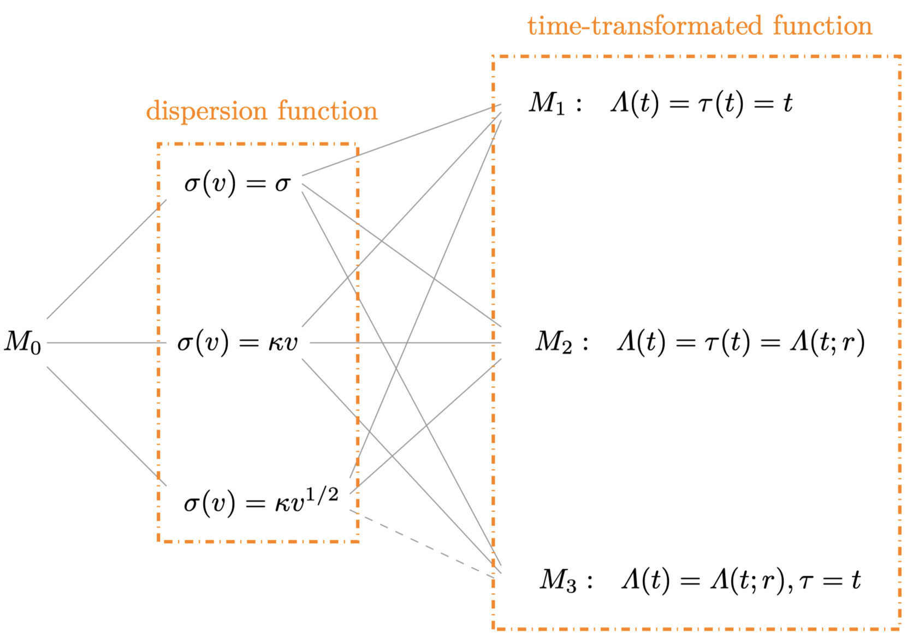
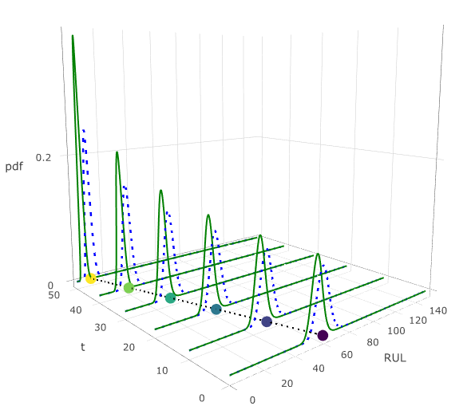
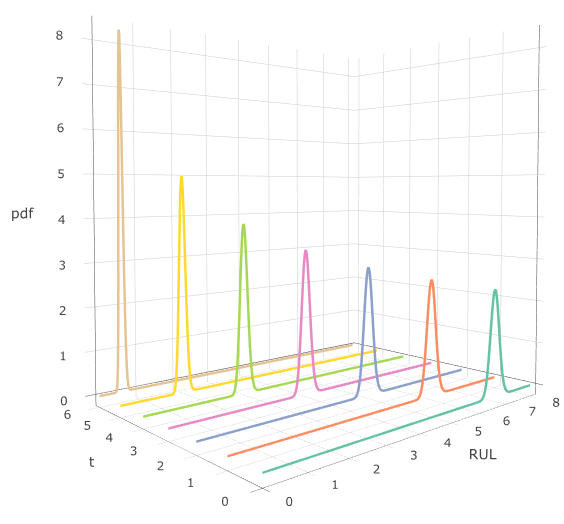

2 基于维纳过程的统计建模
2.1 维纳过程
若连续时间随机过程 \(\{B(t), t \geqslant 0\}\)满足以下条件:
\(B(0)=0\);
\(B(t)\) 有平稳独立增量;
对任意 \(t,s \geqslant 0\), \(B(t+s)-B(s)\) 服从均值为 \(0\), 方差为 \(t\) 的正态分布;
\(B(t)\)关于\(t\)是连续函数,
则称\(\{B(t), t \geqslant 0\}\)服从标准布朗运动过程或标准维纳过程.
根据上述定义, 带时间漂移的维纳过程可表示为 \[\begin{equation}\label{w1} X(t)=v t+\sigma B(t), \end{equation}\] 其中参数 \(v\) 和 \(\sigma\) 分别为漂移参数和扩散参数, \(\{B(t), t \geqslant 0\}\)为标准布朗运动过程. 根据定义, 随机过程\(\{X(t), t \geqslant 0\}\)具有以下性质: (I) 在任意时间点 \(t, s>0\), 增量 \(\Delta X = X(t+s) - X(s)\) 服从正态分布\(N(v t, \sigma^2 t)\) ; (II) 对任意两个不相交时间区间 \([t_1, t_2]\) 和 \([t_3, t_4]\) (\(0\leqslant t_1 < t_2 \leqslant t_3 < t_4\)), 增量 \(X(t_2) - X(t_1)\) 与 \(X(t_4) - X(t_3)\) 相互独立.
上述模型主要适用于退化路径呈线性变化的情形. 然而, 对于某些产品, 性能退化可能随时间呈现非线性趋势. 为描述这一特性, 可采用以下形式的非线性维纳过程 (Whitmore, 1995) \[\begin{equation}\label{w2} Y(t) = v \Lambda(t) + \sigma B(\Lambda(t)), \end{equation}\] 其中 \(\Lambda(t)\) 为时间尺度函数. 通过选择合适的函数形式, 如\(\Lambda(t)=t^\alpha\), 模型能够灵活地描述线性、凹形或凸形的退化路径, 从而更准确地拟合不同类型的退化数据. 这一改进的模型在保留经典维纳过程优良数学性质的同时, 显著增强了其在非线性退化问题中的适用性, 为复杂退化数据的建模与分析提供了更强有力的工具.
退化建模的主要目的是为了评估产品的可靠性与寿命. 与传统产品失效不同的是, 基于性能退化的失效被定义为退化值首次超过预设失效阈值 \(\omega\) 的时间, 该时间即为产品的寿命. 若产品性能退化过程由随机过程\(\{X(t), t \geqslant 0\}\)来描述, 则产品寿命\(T\) 定义为 \[T = \inf\{t \mid X(t) \geq \omega\},\] 即, 随机过程\(\{X(t), t \geqslant 0\}\)的首达时. 假设\(\{X(t), t \geqslant 0\}\)是维纳过程 \(\eqref{w1}\), 根据维纳过程的性质可知产品寿命\(T\)服从逆高斯分布\(\textrm{IG}(\omega/v, \omega^2/\sigma^2)\), 其对应的 累积分布函数(Cumulative distribution function, CDF)和概率密度函数(Probability density function, PDF)分别为 \[\begin{align} F_T(t) &= \Phi\left(\frac{v t - \omega}{\sigma \sqrt{t}}\right) + \exp\left(\frac{2v \omega}{\sigma^2}\right) \Phi\left(\frac{-\omega - v t}{\sigma \sqrt{t}}\right), \\ f_T(t) &= \frac{\omega}{\sqrt{2\pi \sigma^2 t^3}} \exp\left[-\frac{(\omega - v t)^2}{2\sigma^2 t}\right]. \end{align}\] 由逆高斯分布的性质, 产品寿命 \(T\) 的期望和方差分别为 \[\begin{equation} \mathbb{E}(T) = \frac{\omega}{v}, \quad \mathbb{Var}(T) = \frac{\omega \sigma^2}{v^3}. \end{equation}\] 同理, 若产品性能退化由非线性维纳过程刻画, 则产品寿命\(T\)服从时间尺度变换的逆高斯分布, 即, \(\Lambda(T)\sim \textrm{IG}(\omega/v, \omega^2/\sigma^2)\).
上述两类维纳过程模型\(\eqref{w1}\)-\(\eqref{w2}\)在描述较为简单的退化模式方面表现出色, 已广泛应用于工程实践并取得了良好的效果. 然而, 在面对更加复杂的退化行为时, 这些模型的适用性可能受到一定限制. 为此, 本章进一步拓展模型, 以增强对复杂退化过程的解释能力: 1. 广义维纳过程模型:
针对退化速率和波动率随时间动态变化的情况, 该模型通过引入灵活的时间尺度函数 \(\Lambda(t)\), 使得均值和方差能够随时间进行动态调整, 从而更精确地刻画复杂的退化路径及产品性能变化趋势. 2. 两阶段维纳过程模型: 针对某些产品在退化过程中存在明显的阶段性变化 (如退化速率在特定时间点发生突变), 该模型将退化过程划分为两个阶段, 并分别采用独立的维纳过程进行建模, 以更准确地反映退化速率变化对寿命分布的影响. 本章将在第 2.2 节和第 2.3 节中详细阐述这两类扩展模型的理论推导及其在寿命预测中的实际应用.
2.2 广义维纳过程
维纳模型\(\eqref{w1}\)-\(\eqref{w2}\)假设所有产品性能退化的波动率\(\sigma\)是相同的. 然而, 实际中退化波动率往往并非固定不变, 且可能与退化速率 \(v\) 存在显著相关性. 例如, 在对镓砷激光器数据的研究中, Ye 等 (2015) 发现退化速率 \(v\) 与波动率 \(\sigma\) 的皮尔逊相关系数达到 0.487. 这表明, 退化过程中的波动程度可能随退化速度的加快或减缓而相应增强或减弱. 为更准确地描述这种依赖关系, Ye 等 (2015) 提出了一种改进模型, 用 \(\sigma v\) 替代原模型中的扩散参数 \(\sigma\), 并成功应用于疲劳裂纹数据的拟合分析. 此后, 相关研究进一步拓展了这一思路: Wang 等 (2019) 在时间尺度 \(\Lambda(t) = t\)的假设下, 将该改进模型应用于在线剩余使用寿命 (Remaining useful life, RUL)预测; Zhai 等 (2018) 结合加速失效时间原理对模型进行了改进, 假设退化速率 \(v\) 服从逆高斯分布, 以简化数学推导过程; Yan 等 (2020) 在线性退化路径的假设下, 基于 Zhai 等 (2018) 的模型引入测量误差, 并提出EM算法来估计模型参数.
尽管上述改进模型在一定程度上考虑了退化速率 \(v\) 与波动性 \(\sigma\) 的相关性, 但仍假设退化过程的均值与方差比保持恒定. 然而, 这一假设在实际中可能过于严格, 因为退化路径的动态变化往往会导致均值与方差比随时间而改变. 为更准确地刻画复杂的退化行为, 本节提出了一种广义维纳过程模型, 并在现有研究的基础上作出以下改进: (1) 引入退化速率 \(v\) 与波动性 \(\sigma\) 的动态依赖关系, 并允许均值-方差比随时间变化, 从而更准确地刻画复杂退化行为. (2) 通过模型的改进, 推导出产品寿命分布的近似解析表达式, 从而为模型的灵活应用和可靠性评估提供理论基础. 本节内容安排如下: 第 2.2.1 节提出广义维纳退化模型, 并给出产品寿命分布的近似解析表达式; 第 2.2.2 节介绍该模型参数的统计推断方法, 包括 EM 算法的构造、初值选择方法以及时间尺度函数的确定; 第 2.2.3 节通过模拟研究验证算法性能; 第 2.2.4 节展示两个实际退化数据的分析案例, 说明该模型在复杂退化场景中的实际应用效果.
2.2.1 模型构建
令 \(Y(t)\) 表示产品在时间 \(t\) 的退化值. 记如下带漂移参数 \(v\) 和扩散函数 \(\sigma(v)\) 的维纳过程为 \(M_{0}\): \[ M_0: Y(t)=v\Lambda(t) + \sigma(v)B(\tau(t)), \] 其中 \(\Lambda(t) =\Lambda(t; r)\) 和 \(\tau(t)=\tau(t; b)\) 为两个单调递增的时间变换函数, \(\Lambda(0) = \tau(0)=0\), \(B(\cdot)\) 为标准布朗运动. 从物理意义上看, 漂移参数 \(v\) 代表退化率或退化斜率, 而扩散参数 \(\sigma(v)\) 表示退化波动性. 由于 \(\tau(t)\) 在区间 \([0, \infty]\) 上是单调递增的, 可证明 \(B(\tau(t))\) 保持了标准布朗运动的基本性质. 因此, \(Y(t)\) 具有以下性质: (i) \(Y(0) = 0\); (ii) \(Y(t)\) 有独立增量; (iii) 对任意 \(t > s > 0\), 增量 \(\Delta Y(t) = Y(t) - Y(s)\) 服从正态分布, 均值为 \(v \Delta \Lambda(t)\), 方差为 \(\sigma(v) \Delta \tau(t)\), 其中 \(\Delta \Lambda(t) = \Lambda(t) - \Lambda(s)\), \(\Delta \tau(t) = \tau(t) - \tau(s)\).
与现有的维纳退化模型相比, 所提模型 \(M_0\) 具有两个主要特点: 1. 扩散参数 \(\sigma(v)\) 被设定为漂移参数 \(v\) 的函数, 从而能够刻画退化波动性与退化速率之间的相关性; 2. 根据模型 \(M_0\), 可得\(\mathbb{E}(Y(t)) = v \Lambda(t), \quad \mathbb{Var}(Y(t)) = \sigma^2(v) \tau(t)\), 则 其均值-方差比为 \(v \Lambda(t) / (\sigma^2(v) \tau(t))\). 该比值随时间变化, 表明模型能够有效捕捉复杂退化过程的时序特征. 通过对 \(\sigma(v)\) 和 \(\tau(t)\) 选择合适的函数形式, 模型 \(M_0\) 不仅能够覆盖现有的维纳退化模型, 还可为尚未深入研究的潜在模型提供理论支持与构建框架. 图 2.1 展示了所提模型及其特例, 其中 实线灰色线条表示已包含在模型 \(M_0\) 中的现有维纳退化模型; 虚线灰色线条则代表尚未深入研究但可视为模型 \(M_0\) 潜在扩展的模型.
在模型\(M_0\)中, \(\sigma(v)\), \(\Lambda(t)\) 和 \(\tau(t)\)不同选择方式可对应文献中不同的维纳过程模型.
传统维纳退化模型 (TWM) (当\(\sigma(v)=\sigma\)时):
当 \(\Lambda(t) = \tau(t) = t\) 时, 该模型适用于线性漂移的退化过程 (模型 \(\eqref{w1}\)) , 可参考 Ye 等 (2012) 和 Tsai 等 (2011) .
当 \(\Lambda(t) = \tau(t) = \Lambda(t; r)\) 时, 该模型适用于非线性漂移的退化过程 (模型 \(\eqref{w2}\)) , 相关研究可见 Whitmore 等 (1997) 和 Tsai 等 (2011).
当 \(\Lambda(t) = \Lambda(t; r), \tau(t) = t\) 时, 该模型是非线性 TWM 的简化形式, 旨在降低数学推导的复杂性, 已被 Si 等 (2011) 研究.
广义维纳退化模型-类型 I (NWM-I) (当\(\sigma(v)=v\kappa\)时):
广义维纳退化模型-类型II (NWM-II) (当\(\sigma(v)=v^{1/2}\kappa\)时), 该模型保留了NWM-I的所有特性, 同时具备更优越的数学性质:
当 \(\Lambda(t) = \tau(t) = \Lambda(t; r)\) 时, 记该模型为非线性 NWM-II, 最早由 Zhai 等 (2018) 结合加速失效时间原理提出并研究.
当 \(\Lambda(t) = \Lambda(t; r), \tau(t) = t\) 时, 记该模型为 NWM-II. 此外, 对于 \(\Lambda(t)\) 和 \(\tau(t)\) 的一般函数形式, 这些模型尚未被深入研究.
通过对模型 \(M_0\) 的讨论可看出, NWM-II模型不仅同时具备时间变化的均值-方差比, 以及退化率与波动性之间的依赖关系, 还具有更优越的数学性质. 因此, 本节将重点研究NWM-II模型. 在实际应用中, 除了共同的退化趋势外, 不同样本之间往往存在个体异质性. 从统计学的角度来看, 这种不确定性通常可以通过引入随机效应来刻画. 为进一步扩展NWM-II模型, 本文假设漂移参数 \(v\) 服从逆高斯分布 \(\mathcal{IG}(\alpha, \beta)\). 为简化记号, 我们仍将新模型记为模型 \(M_0\), 则有 \[\begin{equation}\label{m0} M_0:\begin{cases} Y(t)=v\Lambda(t) + \kappa v^{1/2}B(\tau(t)),\\ v\sim \mathcal{IG}(\alpha, \beta). \end{cases} \end{equation}\] 基于模型 \(M_0\), 可得出定理 2.1, 其具体的数学推导过程详见本节附录 2.2.5.
定理 2.1 在模型 \(M_0\) 下, \(Y(t)\) 的边际PDF为:
\[\begin{equation}\label{eq1}
f_{Y(t)}(y_{t}) = \sqrt{\frac{\beta a_{1}(t)}{\pi^2\kappa^2\tau(t)a_{2}(t)}}e^{a_{3}(t)}K_{-1}\left(\sqrt{a_{1}(t)a_{2}(t)}\right),
\end{equation}\] 其中 \[
a_{1}(t)=\frac{ \Lambda(t)^2}{ \tau(t) \kappa^2}+\frac{\beta}{\alpha^2},~~
a_{2}(t)=\frac{ y_{t}^{2}}{ \tau(t) \kappa^2}+\beta,~~
a_{3}(t)=\frac{ y_{t} \Lambda(t)}{ \tau(t) \kappa^2}+\frac{\beta}{\alpha},
\] 并且 \[
K_{p}(x) = \frac{1}{2}\int_{0}^{\infty} \mu^{p-1} \exp\left(-\frac{x}{2}\left(\mu+\mu^{-1}\right)\right) \diff \mu
\] 是第二类 \(p\) 阶修正贝塞尔函数. \(Y(t)\) 的无条件均值和方差分别为 \[\begin{equation*}
\begin{aligned}
\mathbb{E}(Y(t)) &= \mathbb{E}_{v}[\mathbb{E}(Y(t) \mid v)]=\alpha \Lambda(t),\\
\mathbb{Var}(Y(t))&=\mathbb{E}_{v}[\mathbb{Var}(Y(t) \mid v)] + \mathbb{Var}_{v}[\mathbb{E}(Y(t) \mid v)] =\alpha k^{2} \tau(t) + \frac{\alpha^3}{\beta} \Lambda(t).
\end{aligned}
\end{equation*}\] 可得带随机效应的 \(M_0\) 模型的均值-方差比为 \(\Lambda(t)/\left[\kappa^2\tau(t) + \frac{\alpha^2}{\beta} \Lambda(t)\right]\), 该比值随时间动态变化.
基于模型 \(M_0\), 产品寿命可定义为\(T = \inf\{t \mid Y(t) \geq \omega\}\). 寿命\(T\)的CDF可表示为 \[\begin{align}\label{eq2x} F_{T}(t) &=1 - P(T>t) = 1 - P(Y(t) \leq \omega)\nonumber\\ % &= \int_{\omega}^{\infty} f_{Y(t)}(y_{t}) d y_{t} \\ &= \sqrt{\frac{\beta a_{1}(t)}{\pi^2\kappa^2\tau(t)}} \int_{\omega}^{\infty} \frac{e^{a_{3}(t)}}{\sqrt{a_{2}(t)}}K_{-1}\left(\sqrt{a_{1}(t)a_{2}(t)}\right) \diff y_{t}. \end{align}\] 由于式 \(\eqref{eq2x}\) 中被积函数过于复杂, \(F_{T}(t)\)难以获得解析表达式. 为此, 本节提出了一种近似表达式, 具体步骤如下: 首先, 在给定 \(v\) 的条件下, 基于模型 \(M_1\) 和 \(M_3\) (见图 2.1)中得到\(T\) 的条件PDF; 然后, 进一步得到在模型 \(M_2\) 和 \(M_0\)下\(T\)的条件PDF. 相关结果见定理 2.2. 详细的推导过程见本节附录 2.2.5.
定理 2.2 在模型 \(M_0\) 下, 产品寿命\(T\)的条件条件PDF可近似为 \[\begin{equation}\label{eq6}
f_{M_0}(t \mid v, \omega) \cong g_{M_0}(t \mid v, \omega)/A,
\end{equation}\] 其中 \(A=\int_{0}^{\infty}g_{M_0}(t \mid v, \omega) \diff t\) 是正则化常数,
\[
g_{M_0}(t \mid v,\omega) = \frac{1}{\sqrt{2\pi \tau(t)}}\left(\frac{S_{2}(\tau(t))}{\tau(t)}+\frac{v H^{'}(\tau(t))}{\sigma(v)}\right)\exp\left(-\frac{(S_{2}(\tau(t)))^2}{2\tau(t)}\right)\tau^{'}(t),
\] \[S_{2}(\tau(t)) = \frac{1}{\sigma(v)}\left(\omega-vH(\tau(t))\right), \quad H^{'}(\tau(t))=\frac{\partial H(\tau(t))}{\partial \tau(t)}, \quad \tau^{'}(t)=\frac{\partial \tau(t)}{\partial t}.\]
在得到 \(T\) 的条件PDF后, 可通过随机效应 \(v\) 来处理寿命分布中的不确定性. 具体方法是对 \(f_{M_0}(t \mid v, \omega)\)关于\(v\)求期望, 从而推导出\(T\) 的边际PDF, 相关结果见定理 2.3, 详细推导过程参见本节附录 2.2.5.
定理 2.3 在模型\(M_0\)下, 失效时间的近似无条件PDF为 \[\begin{align}\label{eq7} f_{M_0}(t \mid \omega) \cong \int_{0}^{\infty} f_{M_0}(t \mid v, \omega) f(v) \iff v=w(t \mid \omega)/A_{1}, \end{align}\] 其中 \(A_{1}=\int_{0}^{\infty} w(t \mid \omega) \text{d} t\) 是与 \(\omega\) 相关的正则化常数, 且 \[ \begin{aligned} w(t \mid \omega) = & \frac{\tau^{'}(t)\sqrt{\beta}}{\pi\kappa\sqrt{\tau(t)}} e^{a_{3}(t)} \left[ \left(H^{'}(\tau(t)) - \frac{H(\tau(t))}{\tau(t)}\right)K_{0}(\sqrt{a_{1}(t)a_{2}(t)}) \right. \\ & \left. + \frac{\omega}{\tau(t)}K_{-1}(\sqrt{a_{1}(t)a_{2}(t)}) \right], \end{aligned} \] \[ a_{1}(t) = \frac{\left(H(\tau(t))\right)^2}{\kappa^2} + \frac{\beta}{\alpha^2}, \quad a_{2}(t)=\frac{\omega^2}{\kappa^2}+\beta,\quad a_{3}(t) = \frac{\omega H(\tau(t))}{\kappa^2} + \frac{\beta}{\alpha}. \]
在上述公式中, 复合函数 \(H(\tau(t))\) 及其导数 \(H'(\tau(t))\) 的形式依赖于时间变换函数 \(\Lambda(t)\) 和 \(\tau(t)\) 的具体组合. 为便于理解, 表 \(\ref{tbl-RESS2021-tab1}\) 对不同 \(\Lambda(t)\) 和 \(\tau(t)\) 的组合下, \(H(s)\) 及 \(H'(\tau(t))\) 的具体表达式进行了汇总.
2.2.2 统计推断
假设退化试验中共有 \(n\) 个随机样品, 令\(y_{ij}=Y(t_{ij})\) 表示第 \(i\) 个样品在时间点 \(t_{ij}\) 处测得的退化量, 且第\(i\)个样品的测量次数为\(m_i\). 定义退化增量 \(\Delta\boldsymbol{Y}=(\Delta \boldsymbol{Y_1},\dots,\Delta \boldsymbol{Y_n})'\), \(\Delta \boldsymbol{Y_i} = (\Delta y_{i1},\Delta y_{i2}, \dots, \Delta y_{im_i})'\), 且 \(\Delta y_{ij} = y_{ij}-y_{ij-1}, j=1,2, \dots, m_i\). 所有样品的初始时间点为 \(t_{i0} = 0\), 初始退化值为 \(y_{i0} = 0\). 假设性能退化规律服从模型\(M_0\), 则有漂移参数 \(v_i\)服从逆高斯分布\(\textrm{IG}(\alpha, \beta)\), 且\(v_i, i=1,\dots,n\)之间相互独立. 在给定 \(v_i\) 的条件下, 退化增量 \(\Delta y_{ij}\) 服从均值 \(v_i \Delta \Lambda_{ij}\) 和方差 \(\sigma(v_i)^2 \Delta \tau_{ij}\) 的正态分布, 其中 \(\Delta \Lambda_{ij}=\Lambda(t_{ij})-\Lambda(t_{ij-1})\), \(\Delta \tau_{ij}=\tau(t_{ij})-\tau(t_{ij-1})\). 基于此, \(\Delta Y_i\) 和 \(v_i\) 的联合PDF为 \[\begin{equation} \begin{aligned}\label{eq2} &f_{\Delta \boldsymbol{Y_{i}}, v_{i} \mid \boldsymbol{\Theta}}(\Delta y_{i}, v_{i}) \\ = & \sqrt{\frac{\beta}{2\pi v_{i}^3}}\exp\left[-\frac{\beta(v_{i} - \alpha)^2}{2\alpha^2 v_{i}}\right] \prod\limits_{j=1}^{m_{i}} \left\{ \frac{1}{\sqrt{2\pi \sigma(v_{i})^{2}\Delta \tau_{ij}}}\exp\left[-\frac{( \Delta y_{ij} - v_{i}\Delta \Lambda_{ij})^2}{2 \sigma(v_{i})^{2}\Delta \tau_{ij}}\right] \right\}\nonumber\\ =&\sqrt{\frac{\beta}{(2\pi)^{m_{i}+1}v_{i}^{m_{i}+3}\kappa^{2m_{i}}}} e^{a_{3i}} \prod\limits_{j=1}^{m_{i}}\left(\Delta h_{2ij}^{-1/2}\right) \exp\left[-\frac{1}{2}\left(\frac{a_{2i}}{v_{i}}+a_{1i}v_{i}\right)\right], \end{aligned} \end{equation}\] 其中 \(\boldsymbol{\Theta}=(\alpha,\beta, \kappa^2, r, b)\) 为模型的待估参数, \(r\) 和 \(b\) 分别是 \(\Lambda(t)=\Lambda(t; r)\) 和 \(\tau(t)=\tau(t; b)\) 中的未知参数; \(a_{1i}\), \(a_{2i}\) 和 \(a_{3i}\) 分别为 \[\begin{equation}\label{aa} a_{1i}=\sum_{j=1}^{m_{i}}\frac{ \Delta \Lambda_{ij}^2}{\Delta \tau_{ij} \kappa^2}+\frac{\beta}{\alpha^2}, \quad a_{2i}=\sum_{j=1}^{m_{i}}\frac{ \Delta y_{ij}^{2}}{ \Delta \tau_{ij} \kappa^2}+\beta, \quad a_{3i}=\sum_{j=1}^{m_{i}}\frac{ \Delta y_{ij} \Delta \Lambda_{ij}}{ \Delta \tau_{ij} \kappa^2}+\frac{\beta}{\alpha}.~~ \end{equation}\] 对联合分布\(f_{\Delta \boldsymbol{Y_{i}}, v_{i} \mid \boldsymbol{\Theta}}(\Delta y_{i}, v_{i})\)求积分消去 \(v_i\) 后, 即可得到\(\Delta Y_i\) 的边际PDF \[\begin{equation}\label{nq6} f_{\Delta \boldsymbol{Y_{i}} \mid \boldsymbol{\Theta}}(\Delta y_{i}) = \sqrt{\frac{\beta a_{2i}^{p_{i}}}{2^{m_{i}-1}(\pi)^{m_{i}+1}\kappa^{2m_{i}}a_{1i}^{p_{i}}}}e^{a_{3i}} \prod\limits_{j=1}^{m_{i}}\left(\Delta \tau_{ij}^{-1/2}\right) K_{p_{i}}(\sqrt{a_{1i}a_{2i}}), \end{equation}\] 其中 \(p_{i}=-\frac{m_{i}+1}{2}\) 是第二类修正贝塞尔函数的阶数. 因此, 基于观测数据 \(\Delta Y\), 未知参数 \(\boldsymbol{\Theta}\) 的极大似然估计 (Maximum Likelihood Estimator, MLE) 可通过最大化对数似然函数 \[\begin{equation}\label{nq7} \ell(\boldsymbol{\Theta} \mid \Delta \boldsymbol{Y}) = \sum_{i=1}^{n} \log\left(f_{\Delta \boldsymbol{Y_{i}} \mid \boldsymbol{\Theta} }(\Delta y_{i})\right) \end{equation}\] 获得. 然而, 由于涉及到第二类修正贝塞尔函数 \(K_{p_i}(\cdot)\), 且其对数似然函数的导数包含所有未知参数 \(\boldsymbol{\Theta}\), 直接优化 \(\ell(\boldsymbol{\Theta} \mid \Delta \boldsymbol{Y})\) 并不容易. 为了克服这个难题, 考虑采用期望最大化 (Expectation Maximization, EM) 算法来求解参数估计.
2.2.2.1 EM 算法
EM 算法通过迭代执行 E 步和 M 步来估计参数 \(\boldsymbol{\Theta}\). 将漂移参数 \(\boldsymbol{v} = (v_1, v_2, \dots, v_n)\) 视为隐变量, 则基于完全数据 \(\boldsymbol{Z} = (\Delta \boldsymbol{Y}, \boldsymbol{v})\)的对数似然函数为 \[\begin{align} \label{nq8} \ell_{c}(\boldsymbol{\Theta} \mid \Delta \boldsymbol{Y}, \boldsymbol{v}) =& \sum_{i=1}^{n} \log\left(f_{\Delta \boldsymbol{Y_{i}},v_{i} \mid \boldsymbol{\Theta}}(\Delta y_{i},v_{i}) \right)\nonumber\\ = & \frac{1}{2}\sum_{i=1}^{n}\left\{\log(\beta)-(m_{i}+3)\log(v_{i}) - \sum_{j=1}^{m_{i}}\log\left(\Delta \tau_{ij}\right) \right.\nonumber\\ &\left. \vphantom{\sum_{j=1}^{m_{i}}\log\left(\Delta \tau_{ij}\right)}- m_{i}\log(\kappa^2)+2a_{3i}-a_{1i}v_{i}-\frac{a_{2i}}{v_{i}}\right\} + C, \end{align}\] 其中\(C = \log(2\pi)/2 (n + \sum_{i=1}^{n}m_{i})\)为常数. 假设\(\boldsymbol{\Theta}^{(s)}\)是在第\(s\)次迭代中的M步的最优解. 在第\((s + 1)\)次迭代中, 需要计算以下Q函数 \[\begin{equation}\label{RESS2021-nq11} \begin{aligned} Q(\boldsymbol{\Theta} \mid \boldsymbol{\Theta}^{(s)}) &= \sum_{i=1}^{n}\mathbb{E}_{v_{i} \mid \Delta \boldsymbol{Y_{i}}, \boldsymbol{\Theta}^{(s)}}\left[\log\left(f_{\Delta \boldsymbol{Y_{i}},v_{i}}(\Delta y_{i},v_{i}) \mid \boldsymbol{\Theta} \right)\right]\nonumber\\ &=\frac{1}{2}\sum_{i=1}^{n}\bigg\{\log(\beta)-(m_{i}+3)\mathbb{E}_{v_{i} \mid \Delta Y, \boldsymbol{\Theta}^{(s)}}[\log(v_{i})]\\ &\ \ \ \ -\sum_{j=1}^{m_{i}}\log\left(\Delta \tau_{ij}\right)-m_{i}\log(\kappa^2)+2a_{3i}-a_{1i}\mathbb{E}_{v_{i} \mid \Delta \boldsymbol{Y}, \boldsymbol{\Theta}^{(s)}}[v_{i}]\\ &\ \ \ \ -a_{2i}\mathbb{E}_{v_{i} \mid \Delta \boldsymbol{Y}, \boldsymbol{\Theta}^{(s)}}[v_{i}^{-1}]\bigg\} + C, \end{aligned} \end{equation}\] 其中数学期望是关于 条件密度函数\(p(\boldsymbol{v} \mid \Delta \boldsymbol{Y}, \boldsymbol{\Theta}^{(s)})\)来计算. 条件PDF \(p(\boldsymbol{v} \mid \Delta \boldsymbol{Y}, \boldsymbol{\Theta}^{(s)})\)及条件期望值\(\mathbb{E}_{v_{i} \mid \Delta \boldsymbol{Y_{i}},\boldsymbol{\Theta}^{(s)}}[v_{i}]\)和\(\mathbb{E}_{v_{i} \mid \Delta \boldsymbol{Y}_{i},\boldsymbol{\Theta}^{(s)}}[v_{i}^{-1}]\)的详细推导见本节附录 2.2.5. 在得到式\(\eqref{RESS2021-nq11}\)中的 Q 函数后, 在 M 步中通过以下更新公式计算最优解: \[\begin{equation}\label{wiener-RESS2021-arg} \boldsymbol{\Theta}^{(s+1)}=\arg \max _{\boldsymbol{\Theta}} Q\left(\boldsymbol{\Theta} \mid \boldsymbol{\Theta}^{(s)}\right). \end{equation}\] M步的详细推导可见本节附录 2.2.5. 当E步和M步的迭代满足指定的收敛准则后, 即可得到 \(\boldsymbol{\Theta}\) 的MLE. EM算法可通过以下步骤来实现:
2.2.2.2 确定初始值
在 EM 算法的实现中, 初始值的选择至关重要. 它不仅影响算法的收敛速度, 还可能决定算法是否能够找到全局最优解. 为此, 本小节基于 Ye 等 (2013) 的方法, 提出了一种基于三步法的参数初始值选取策略, 以提高算法的稳定性与求解精度. 具体步骤如下:
2.2.2.3 确定 \(\Lambda(t), \tau(t)\) 形式
在模型构建中, 时间变换函数 \(\Lambda(t)\) 和 \(\tau(t)\) 的选择至关重要. 它们直接决定了模型对退化路径及其波动特性的刻画能力, 也对模型的拟合效果和预测精度产生重要影响. 针对具有递增退化特性的产品 (递减特性可通过适当变换转化为递增形式) , 退化路径通常呈现三种典型形态: 凹形、线性和凸形 (见图 2.2). 为适应不同形态的退化路径, 本小节基于退化路径的平均趋势和波动特性, 提出一种系统化的框架, 指导时间变换函数的选择.
对于模型中的平均退化路径 \(v\Lambda(t)\), 由于其递增且退化速率 \(v>0\), 因此可以将其视为比例参数, 此时路径的形状完全由 \(\Lambda(t)\) 中的参数 \(r\) 决定. 常见的 \(\Lambda(t)\) 形式包括幂律函数 (\(t^r\), 当 \(r=1\) 时为线性) 和指数律函数 (\(\exp(rt)-1\)) , 如表 \(\ref{tbl-tab:th1}\) 所示. 从表中可以看出, 幂律函数相比指数律函数更灵活, 能够涵盖各种可能的退化趋势. 然而, 对于许多表现为凸形退化路径的产品, 这两种函数形式在实际应用中难以区分. 为解决上述问题, 本小节提出了一种基于皮尔逊相关系数的方法来选择最优的时间变换函数形式. 给定变量 \(\{y_i\}_{i=1}^n\) 及其预测值 \(\{\hat{y}_i\}_{i=1}^n\), 相关系数定义为 \[\begin{equation}\label{ccor} \rho_{xy}=\frac{\sum_{i=1}^{n}(y_{i}-\bar{y})(\hat{y}_{i}-\bar{y})}{\sqrt{\sum_{i=1}^{n}(y_{i}-\bar{y})^2}\sqrt{\sum_{i=1}^{n}(\hat{y}_{i}-\bar{y})^2}}, \end{equation}\] 其中\(\bar{y}=\frac{1}{n}\sum_{i=1}^{n}y_{i}\). 当 \(\rho_{xy}\) 的绝对值越接近 1 时 (Kvalseth, 1985), 表明 \(\{\hat{y}_i\}_{i=1}^n\) 与 \(\{y_i\}_{i=1}^n\) 之间的相关性越强. 基于上述讨论, 确定 \(\Lambda(t)\) 和 \(\tau(t)\) 形式的具体步骤如下:
2.2.3 模拟实验
本节通过模拟研究验证模型 \(M_0\) 及其所提算法的性能. 由于模型 \(M_i\) (\(i = 1, 2, 3\)) 是 \(M_0\) 的特殊形式, 因此在实验中未单独考虑. 本实验基于表 \(\ref{tbl-RESS2021-tab1}\) 中的四种场景, 分别设定样本量 \(n=25\)、50 和 100, 以及测量次数 \(m=15\) 和 30. 检测从第 1 小时开始, 每小时记录一次数据. 依据模型 \(M_0\), 结合时间尺度函数 \((\Lambda(t), \tau(t))\) 和表 \(\ref{tbl-tab:sim1}\)-\(\ref{tbl-tab:sim4}\) 中的参数, 在不同 \((n, m)\) 设置下生成退化数据, 并对每种模拟设置重复 1000 次. 模拟数据生成后, 利用所提出的 EM 算法对模型参数 \(\boldsymbol{\Theta}\) 进行估计, 并计算每种 \((\Lambda(t), \tau(t))\) 组合及 \((n, m)\) 设置下参数估计值的均值和均方误差(Mean squared error, MSE). 模拟结果列于表 \(\ref{tbl-tab:sim1}\)-\(\ref{tbl-tab:sim4}\) 中. 结果显示, 在所有实验场景中, 参数估计值与真实值的差异较小. 此外, 随着样本量 \(n\) 或测量次数 \(m\) 的增加, 参数估计的MSE逐渐减小, 表明所提算法具有较好的收敛性和估计精度.
2.2.4 实例分析
2.2.4.1 激光设备退化数据
为了验证模型在实际数据中的应用效果, 本节对激光器的工作电流退化数据进行建模. 首先, 为确定时间尺度函数 \(\Lambda(t)\) 和 \(\tau(t)\) 的形式, 计算了每个检测时间点激光器工作电流的平均值和经验方差, 并在图 2.3 中直观展示了其变化趋势. 随后, 分别评估了线性函数、幂函数和指数函数作为时间尺度函数的相关系数, 结果汇总于表 \(\ref{tbl-tab:learcor}\) 中. 综合图 2.3 和表 \(\ref{tbl-tab:learcor}\) 的分析结果可得: 线性函数最适合作为 \(\Lambda(t)\) 的形式, 而幂函数更适合作为 \(\tau(t)\) 的形式. 因此, 针对激光数据的最优模型 \(M_{0}\) 可表示为 \(v t + \kappa v^{-1/2} B(t^{b})\).
在确定了 \(\Lambda(t)\) 和 \(\tau(t)\) 的形式后, 使用模型 \(M_{d}\) (\(d=0,1,2,3\)) 对激光退化数据进行拟合. 此外, 还考虑了另一种时间尺度组合 \((\Lambda(t), \tau(t)) = (t^{r}, t^{b})\), 并将其定义为模型 \(M_{0}^{(1)}\). 通过赤池信息准则 (Akaike information criterion, AIC) 对各模型进行比较, AIC 值最小的模型被认为是最优模型. 相关结果汇总于表 \(\ref{tbl-tab:laserres}\). 从该表中可见, 模型 \(M_{0}\) 的 AIC 值最小, 为 -144.178. 相比之下, 即使忽略退化速率与波动性之间的关系 (如 \(\sigma(v) = \sigma\)), 具有两个随机效应的非线性维纳退化模型 (Wang, 2010) 的 AIC 值为 -130.3, 明显高于 \(M_{0}\), 进一步凸显了模型 \(M_{0}\) 的优越性.
图 2.4 (a) 展示了样本均值、估计的平均退化路径 (\(\hat{\alpha}t^{\hat{r}_{1}}\)) 及其 \(95\%\) 置信区间. 可以看出, 样本均值路径完全落在\(95\%\)置信区间内, 且与估计的平均退化路径高度吻合. 针对模型 \(M_{0}\), 图 2.4 (b) 给出了退化阈值 \(\omega=6\) 时的 Kaplan-Meier 经验 分布函数、失效时间分布及其 \(95\%\) 置信区间. 从图中可以看出, 估计的失效时间分布能够准确反映数据特性, 进一步验证了模型 \(M_{0}\)的优越性.
2.2.4.2 碳膜电阻器退化数据
这里以碳膜电阻退化数据为例, 使用所提模型进行建模分析. 首先, 计算电阻百分比增加值的平均值和经验方差, 并利用这些结果来确定 \(\Lambda(t)\) 和 \(\tau(t)\) 形式, 如图 2.5 所示. 接着, 对不同类型 \(\Lambda(t)\) 和 \(\tau(t)\) 下的电阻百分比增加值平均曲线及其经验方差曲线进行拟合, 拟合结果汇总在表 \(\ref{tbl-tab:resiscor}\) 中. 通过分析确定 \(\Lambda(t)\) 和 \(\tau(t)\) 的最优形式均为指数函数. 因此, 最优模型 \(M_{0}\) 为 \(\exp(rt) + \kappa v^{-1/2} B(\exp(bt))\).
接下来, 将碳膜电阻的退化数据分别使用 \(M_{d}\) 和 \(M_{0}^{(1)}\) 在 \((\Lambda(t), \tau(t)) = (t, \exp(bt))\) 的条件下进行拟合. 表 \(\ref{tbl-tab:resisres}\) 给出了各模型的参数估计值及对应的 AIC 值. 结果显示, 模型 \(M_{0}\) 的 AIC 值最小, 为 -104.506. 相比之下, 对于 \(\sigma(v) = \sigma\) 的情况, 广义随机效应维纳退化模型 (Li 等, 2017) 的 AIC 值为 -95.352, 即使考虑测量误差, 该模型的 AIC 值也仅为 -99.979, 仍然高于模型 \(M_{0}\). 与前例类似, 图 2.4 (a) 展示了碳膜电阻退化数据的样本均值、估计的平均退化路径及其 \(95\%\) 置信区间. 可以看出, 样本均值路径完全落在\(95\%\)置信区间内, 与估计的退化路径高度吻合. 图 2.4 (b) 则给出了退化阈值 \(\omega=0.5\) 下 Kaplan-Meier 经验 分布函数、失效时间分布及其 95% 置信区间. 结果表明, 模型 \(M_{0}\) 能够准确反映碳膜电阻的退化数据特征, 再次验证了其优越性.
2.2.5 附录
定理 2.1 证明
在给定漂移参数 \(v\) 的条件下, \(Y(t)\)的条件PDF为 \[\begin{equation*}\label{np2}
f_{ Y(t) \mid v}( y_{t}) = \frac{1}{\sqrt{2\pi \sigma(v)^{2}\tau(t)}}\exp\left[-\frac{( y_{t} - v\Lambda(t))^2}{2 \sigma(v)^{2}\tau(t)}\right].
\end{equation*}\] 因此, \(Y(t)\) 和 \(v\) 的联合PDF可表示为:
\[\begin{equation*}\label{nq3}
f_{ Y(t), v}( y_{t}, v) = \frac{1}{\sqrt{2\pi \sigma(v)^{2} \tau(t)}}\exp\left[-\frac{( y_{t} - v\Lambda(t))^2}{2 \sigma(v)^{2}\tau(t)}\right]\cdot
\sqrt{\frac{\beta}{2\pi v^3}}\exp\left[-\frac{\beta(v - \alpha)^2}{2\alpha^2v}\right].
\end{equation*}\] 通过对 \(v\) 积分, 可以得到 \(Y(t)\) 的边际PDF \[\begin{equation*}\label{nvq1}
\begin{aligned}
f_{Y(t)}(y_{t}) &= \int_{0}^{\infty}\frac{1}{\sqrt{2\pi \sigma(v)^2\tau(t)}}\exp\left[-\frac{(y_{t}-v\Lambda(t))^2}{2\sigma(v)^2\tau(t)}\right]\cdot
\sqrt{\frac{\beta}{2\pi v^3}\exp\left[-\frac{\beta(v-\alpha)^2}{2\alpha^2v}\right]} \diff v\\
&= \frac{\sqrt{\beta}}{2\pi\kappa\sqrt{\tau(t)}} \cdot \int_{0}^{\infty}
\frac{1}{v^2} \exp\left[-\frac{1}{2v}\left(\frac{y_{t}^{2}}{\kappa^2 \tau(t)}+\beta\right) \right. \\
&\quad \left. - \frac{v}{2}\left(\frac{\Lambda^{2}(t)}{\kappa^2 \tau(t)}+\frac{\beta}{\alpha^2}\right) + \left(\frac{y_{t}\Lambda(t)}{\kappa^2 \tau(t)}+\frac{\beta}{\alpha}\right) \right] \diff v.
\end{aligned}
\end{equation*}\] 其中 \[
a_{1}(t)=\frac{ \Lambda(t)^2}{ \tau(t) \kappa^2}+\frac{\beta}{\alpha^2}, \quad
a_{2}(t)=\frac{ y_{t}^{2}}{ \tau(t) \kappa^2}+\beta, \quad
a_{3}(t)=\frac{ y_{t} \Lambda(t)}{ \tau(t) \kappa^2}+\frac{\beta}{\alpha},
\] 化简得到 \[\begin{equation}\label{nvq2}
f_{Y(t)}(y_{t})= \frac{\sqrt{\beta}}{2\pi\kappa\sqrt{\tau(t)}} \exp\left(a_{3}(t)\right)\cdot\int_{0}^{\infty}\frac{1}{v^2}\exp\left[-\frac{1}{2}\left(\frac{a_{2}(t)}{v} + v a_{1}(t)\right)\right] \diff v.
\end{equation}\] 之后令 \(v = \sqrt{\frac{a_{2}(t)}{a_{1}(t)}} \mu\), 式 \(\eqref{nvq2}\) 进一步化简为:
\[\begin{equation*}\label{nvq3}
\begin{split}
f_{Y(t)}(y_{t}) =& \frac{\sqrt{\beta}}{2\pi\kappa\sqrt{\tau(t)}} \exp\left(a_{3}(t)\right) \sqrt{\frac{a_{1}(t)}{a_{2}(t)}}\\
&\times \int_{0}^{\infty}\frac{1}{\mu^2}\exp\left[-\frac{\sqrt{a_{1}(t)a_{2}(t)}}{2}\left(\frac{1}{\mu} + \mu\right)\right] \diff \mu.
\end{split}
\end{equation*}\] 基于阶数为 \(p\) 的第二类修正贝塞尔函数 \[\begin{equation*}\label{nvq4}
K_{p}(x) = \frac{1}{2}\int_{0}^{\infty} \mu^{p-1} \exp\left(-\frac{x}{2}\left(\mu+\mu^{-1}\right)\right) \diff \mu,
\end{equation*}\] 可得到 \[\begin{equation*}\label{nvq5}
f_{ Y(t)}( y_{t}) = \sqrt{\frac{\beta a_{1}(t)}{\pi^2\kappa^2h_{2}(t)a_{2}(t)}}e^{a_{3}(t)}K_{-1}\left(\sqrt{a_{1}(t)a_{2}(t)}\right).
\end{equation*}\]
定理 2.2 证明
对于模型 \(M_1\), 假设已知 \(\omega\) 和 \(v\), 则失效时间 \(T\) 服从均值为 \(\omega/v\) 和形状参数为 \((\omega/\sigma(v))^2\) 的 IG 分布, 其条件PDF为 \[\begin{equation}\label{eq3} f_{M_1}(t \mid v, \omega) = \frac{\omega}{\sqrt{2\sigma(v)^2t^3}}\exp\left(-\frac{(\omega-vt)^2}{2\sigma(v)^2t}\right). \end{equation}\]
对于模型 \(M_2\), 结合 \(\Lambda(t)\)和式 \(\eqref{eq3}\), 其条件PDF可表示为 \[\begin{equation*}\label{eq4} \begin{split} f_{M_2}(t \mid v, \omega) &= f_{M_1}(\Lambda(t; r) \mid v)\Lambda^{'}(t)\\ &=\frac{\omega}{\sqrt{2\sigma(v)^2\Lambda(t)^3}}\exp\left(-\frac{(\omega-v\Lambda(t))^2}{2\sigma(v)^2\Lambda(t)}\right)\Lambda^{'}(t), \end{split} \end{equation*}\] 其中 \(\Lambda^{'}(t)\) 是 \(\Lambda(t)\) 对 \(t\) 的一阶导数.
对于模型 \(M_3\), 假设已知 \(\omega\) 和 \(v\), 则 \(T\)的条件PDF为 (Si 等, 2012):
\[\begin{equation}\label{eq5} f_{M_3}(t \mid v,\omega) = \frac{1}{\sqrt{2\pi t}}\left(\frac{S(t)}{t}+\frac{v \Lambda^{'}(t)}{\sigma}\right)\exp\left(-\frac{(S(t))^2}{2t}\right), \end{equation}\] 其中 \(S(t) = \left[\omega - v \Lambda(t)\right]/\sigma\) 被称为标准布朗运动的时变边界. 接着, 通过在式 \(\eqref{eq5}\) 中设置 \(\sigma = \sigma(v)\), 可以得到 \(M_{3}\) 中 \(T\) 的条件PDF为 \[\begin{equation}\label{eq51} f_{M_3}(t \mid v,\omega) = \frac{1}{\sqrt{2\pi t}}\left(\frac{S_{1}(t)}{t}+\frac{v \Lambda^{'}(t)}{\sigma(v)}\right)\exp\left(-\frac{(S_{1}(t))^2}{2t}\right), \end{equation}\] 其中 \(S_{1}(t) = \left[\omega - v \Lambda(t)\right]/\sigma(v)\). 实际上, 式 \(\eqref{eq3}\) 是式 \(\eqref{eq51}\) 在特定情况下的简化形式, 当 \(\Lambda(t) = t\) 时成立.对于模型 \(M_0\), 为推导其失效时间的条件PDF, 可通过变量替换将 \(M_0\) 转换为模型 \(M_3\) 的形式. 设 \(s = \tau(t)\), 则 \(t = \tau^{-1}(s)\), 相应地, 退化过程 \(M_0\) 可表示为 \[\begin{equation*}\label{nq4} X(s) = vH(s) + \sigma(v) B(s), \end{equation*}\] 其中 \(H(s) = \Lambda(\tau^{-1}(s))\) 是复合时间尺度函数. 根据 Wang 等 (2014) 的假设, 模型 \(M_{0}\) 的失效时间条件PDF近似为 \[\begin{equation*} f_{M_0}(t \mid v, \omega) \cong g_{M_0}(t \mid v, \omega)/A, \end{equation*}\] 其中 \(A=\int_{0}^{\infty}g_{M_0}(t \mid v, \omega) \diff t\) 是正则化常数, 且 \[\begin{equation*} g_{M_0}(t \mid v,\omega) = \frac{1}{\sqrt{2\pi \tau(t)}}\left(\frac{S_{2}(\tau(t))}{\tau(t)}+\frac{v H^{'}(\tau(t))}{\sigma(v)}\right)\exp\left(-\frac{(S_{2}(\tau(t)))^2}{2\tau(t)}\right)\tau^{'}(t), \end{equation*}\] \[S_{2}(\tau(t)) = \frac{1}{\sigma(v)}\left(\omega-vH(\tau(t))\right), \quad H^{'}(\tau(t))=\frac{\partial H(\tau(t))}{\partial \tau(t)}, \quad \tau^{'}(t)=\frac{\partial \tau(t)}{\partial t}.\] 显然, 当 \(\tau(t) = t\) 时, 上式退化为模型 \(M_3\) 的条件PDF.
定理 2.3 证明
根据条件分布的推导, \(f_{M_0}(t \mid v,\omega)\) 可看作 \(T\) 的条件PDF, 其中 \(f_{M_i}(t \mid v, \omega), i=1,2,3\) 是其特殊形式. 因此, 只需推导出模型 \(M_0\) 的近似无条件PDF即可, 其结果为 \[\begin{equation*} \begin{split} f_{M_0}(t \mid \omega) =& \frac{1}{A}\int_{0}^{\infty}\frac{1}{\sqrt{2\pi \tau(t)}}\left(\frac{S_{2}(\tau(t))}{h_{2}(t)}+\frac{v H^{'}(\tau(t))}{\sigma(v)}\right)\\ &\times \exp\left(-\frac{(S_{2}(\tau(t)))^2}{2\tau(t)}\right)\tau^{'}(t) \sqrt{\frac{\beta}{2\pi v^3}}\exp\left[-\frac{\beta(v - \alpha)^2}{2\alpha^2v}\right] \diff v\\ =& \frac{1}{A}\frac{\tau^{'}(t)\sqrt{\beta}}{\pi\sqrt{\tau(t)}}\int_{0}^{\infty} v^{-2/3}\exp \left(-\frac{\beta(v-\alpha)^2}{2\alpha^2v}\right)\\ &\times \left(\frac{\omega-vH(\tau(t))}{\sqrt{v}\kappa \tau(t)}+\frac{\sqrt{v}H^{'}(\tau(t))}{\kappa}\right)\exp\left(-\frac{(\omega-vH(\tau(t)))^2}{2v\kappa^2}\right) \diff v\\ =& \frac{1}{A}\frac{\tau^{'}(t)\sqrt{\beta}}{\pi\kappa \sqrt{\tau(t)}}\int_{0}^{\infty} \left(v^{-2}\frac{\omega}{\tau(t)}+ v^{-1}\left(H^{'}(\tau(t)) - \frac{H(\tau(t))}{\tau(t)}\right)\right)\\ &\times\exp\left(-\frac{v}{2}\left(\frac{(H(\tau(t)))^2}{\kappa^2}+\frac{\beta}{\alpha^2}\right)- \frac{v^{-1}}{2}\left(\frac{\omega^2}{\kappa^2}+\beta\right)+\left(\frac{\omega H(\tau(t))}{\kappa^2}+\frac{\beta}{\alpha}\right)\right) \diff v, \end{split} \end{equation*}\] 令 \[a_{1}(t) = \frac{\left(H(\tau(t))\right)^2}{\kappa^2} + \frac{\beta}{\alpha}, \quad a_{2}(t)=\frac{\omega^2}{\kappa^2}+\beta, \quad a_{3}(t) = \frac{\omega H(\tau(t))}{\kappa^2} + \frac{\beta}{\alpha},\] 则 \[\begin{align*} f_{M_0}(t \mid \omega) \cong \int_{0}^{\infty} f_{M_0}(t \mid v, \omega) f(v) \diff v=w(t \mid \omega)/A_{1}, \end{align*}\] 其中\(A_{1}=\int_{0}^{\infty} w(t \mid \omega) \diff t\) 是正则化常数, 且 \[\begin{equation*} \begin{aligned} w(t \mid \omega)=&\frac{\tau^{'}(t)\sqrt{\beta}}{\pi\kappa\sqrt{\tau(t)}}e^{a_{3}(t)}\left[\left(H^{'}(\tau(t)) - \frac{H(\tau(t))}{\tau(t)}\right)K_{0}(\sqrt{a_{1}(t)a_{2}(t)}) \right. \\ &+ \left. \frac{\omega}{\tau(t)}K_{-1}(\sqrt{a_{1}(t)a_{2}(t)})\right]. \end{aligned} \end{equation*}\] 之后, 通过指定 \(\Lambda(t)\) 和 \(\tau(t)\) 的特殊情况, 从 \(f_{M_0}(t \mid \omega)\) 推导出 \(f_{M_i}(t \mid \omega)\), $ i=1,2,3$. 例如, 当 \(\Lambda(t) = t^r\) 且 \(\tau(t) = t^b\) 时, \(f_{M_0}(t \mid \omega)\) 的近似表达式为 \[\begin{equation*}\label{nq5} \begin{split} f_{M_0}(t \mid \omega) \cong w^{*}(t \mid \omega)/A_{1}^{*}, \end{split} \end{equation*}\] 其中 \(A_{1}^{*}=\int_{0}^{\infty} w_{1}^{*}(t \mid \omega) \diff t\), \[\begin{equation*} w^{*}(t \mid \omega) = \frac{bt^{b-1}\sqrt{\beta}}{\pi\kappa\sqrt{t^{b}}}e^{a_{3}^{*}(t)}\left(\frac{t^{r-b}(r-b)}{r_{2}}K_{0}(\sqrt{a_{1}^{*}(t)a_{2}(t)})+\frac{\omega K_{-1}(\sqrt{a_{1}^{*}(t)a_{2}(t)})}{t^{b}}\right), \end{equation*}\] \(a_{1}^{*}(t) = \frac{t^{2r}}{\kappa^2} + \frac{\beta}{\alpha^2}, \quad a_{3}^{*}(t) = \frac{\omega r t^{r-b}}{\kappa^2 b} + \frac{\beta}{\alpha}.\) 之后, 通过将参数向量 \((r, b)\) 分别设为 \((1, 1)\)、\((r, r)\) 和 \((r, 1)\), 可以得到 \(M_{1}\)、\(M_{2}\) 和 \(M_{3}\) 的无条件PDF.
EM 算法技术细节
1) E步中的条件期望
对于不同样品, 其观测到的退化值和漂移速率相互独立. 因此, 联合分布可以分解为 \[\begin{equation*}\label{fv} f(\boldsymbol{v} \mid \Delta \boldsymbol{Y}, \boldsymbol{\Theta}^{(s)}) = \prod\limits_{i=1}^{n} f(v_{i} \mid \Delta \boldsymbol{Y_{i}}, \boldsymbol{\Theta}^{(s)}), \end{equation*}\] 其中 \(f(v_{i} \mid \Delta \boldsymbol{Y_{i}}, \boldsymbol{\Theta}^{(s)})\) 可以通过贝叶斯公式得到 \[\begin{equation*}\label{nq10} \begin{aligned} f(v_{i} \mid \Delta \boldsymbol{Y_{i}}, \boldsymbol{\Theta}^{(s)}) &= \frac{f_{v_{i},\Delta \boldsymbol{Y_{i}} \mid \boldsymbol{\Theta}^{(s)}}(\Delta y_{i}, v_{i})}{f_{\Delta \boldsymbol{Y_{i}} \mid \boldsymbol{\Theta}^{(s)}}(\Delta y_{i})}\\ &=\frac{\left(a_{1i}^{(s)}/a_{2i}^{(s)}\right)^{p_{i}/2}}{2K_{p_{i}}\left(\sqrt{a_{1i}^{(s)}a_{2i}^{(s)}}\right)}v_{i}^{p_{i}-1} \exp\left[-\frac{1}{2}\left(a_{1i}^{(s)}v_{i}+a_{2i}^{(s)}v_{i}^{-1}\right)\right]. \end{aligned} \end{equation*}\] 该分布为广义逆高斯分布 (Generalized Inverse Gaussian, GIG) 分布, 其聚集(concentration)参数为 \(\sqrt{a_{i1}^{(s)}a_{i2}^{(s)}}\), 尺度参数为 \(\sqrt{a_{i2}^{(s)}/a_{i1}^{(s)}}\), 阶数参数为 \(p_{i}\), 记为 \(\textrm{GIG}(a_{i1}^{(s)}, a_{i2}^{(s)}, p_{i})\). \(a_{i1}^{(s)}\) 和 \(a_{i2}^{(s)}\) 可通过将 \(\Theta^{(s)}\) 代入式 \(\eqref{aa}\) 中得到. 根据 GIG 分布的性质, \(\textrm{GIG}(a_{i1}^{(s)}, a_{i2}^{(s)}, p_{i})\)的一阶矩 (期望值) 和一阶逆矩 (倒数的期望值) 为 \[\begin{equation*} \begin{split} &E_{v_{i} \mid \Delta \boldsymbol{Y_{i}},\boldsymbol{\Theta}^{(s)}}[v_{i}] = \frac{\sqrt{a_{2i}^{(s)}}K_{p_{i}+1}(\sqrt{a_{1i}^{(s)}a_{2i}^{(s)}})}{\sqrt{a_{1i}^{(s)}}K_{p_{i}} (\sqrt{a_{1i}^{(s)}a_{2i}^{(s)}})},\\ &E_{v_{i} \mid \Delta \boldsymbol{Y}_{i},\boldsymbol{\Theta}^{(s)}}[v_{i}^{-1}]= \frac{\sqrt{a_{1i}^{(s)}}K_{p_{i}-1}(\sqrt{a_{1i}^{(s)}a_{2i}^{(s)}})} {\sqrt{a_{2i}^{(s)}}K_{p_{i}}(\sqrt{a_{1i}^{(s)}a_{2i}^{(s)}})}. \end{split} \end{equation*}\]
2) M步中的参数求解
在 M 步中, 通过直接最大化E步中计算得到的 \(Q\) 函数来更新 \(\boldsymbol{\Theta}\). 对 \(\{\alpha, \beta, \kappa^2, r_{1}, r_{2}\}\) 求一阶偏导数, 结果如下: \[\begin{equation*} \begin{aligned}\label{nq12} \frac{\partial Q(\boldsymbol{\Theta} \mid \boldsymbol{\Theta}^{(s)})}{\partial \alpha} &= \frac{\beta}{\alpha^3}\sum_{i=1}^{n}\left\{E_{v_{i} \mid \Delta \boldsymbol{Y}, \boldsymbol{\Theta}^{(s)}}[v_{i}] - \alpha \right\},\\ \frac{\partial Q(\boldsymbol{\Theta} \mid \boldsymbol{\Theta}^{(s)})}{\partial \beta} &= \frac{n}{2\beta} - \frac{1}{2}\sum_{i=1}^{n} \left\{E_{v_{i} \mid \Delta \boldsymbol{Y}, \boldsymbol{\Theta}^{(s)}}[v_{i}] \frac{1}{\alpha^2} + E_{v_{i} \mid \Delta \boldsymbol{Y}, \boldsymbol{\Theta}^{(s)}}[v_{i}^{-1}] - \frac{2}{\alpha}\right\}, \\ \frac{\partial Q(\boldsymbol{\Theta} \mid \boldsymbol{\Theta}^{(s)})}{\partial \kappa^2} &= -\frac{1}{2}\sum_{i=1}^{n}\sum_{j=1}^{m_{i}} \left\{ \frac{1}{\kappa^2}-E_{v_{i} \mid \Delta Y, \Theta^{(s)}}[v_{i}] \frac{\Delta \Lambda_{ij}^2}{\Delta \tau_{ij}}\frac{1}{\kappa^4} \right.\\ &\quad \left. - E_{v_{i} \mid \Delta Y, \Theta^{(s)}}[v_{i}^{-1}]\frac{\Delta y_{ij}^{2}}{\Delta \tau_{ij}}\frac{1}{\kappa^4} + 2\frac{\Delta y_{ij}\Delta \Lambda_{ij}}{\Delta \tau_{ij}}\frac{1}{\kappa^4} \right\},\\ \end{aligned} \end{equation*}\] \[\begin{equation*} \begin{aligned}\label{nq123} \frac{\partial Q(\boldsymbol{\Theta} \mid \boldsymbol{\Theta}^{(s)})}{\partial r} &=-\sum_{i=1}^{n}\sum_{j=1}^{m_{i}}\left\{\frac{\Delta {\Lambda}^{\prime}_{ij}}{\Delta \tau_{ij}\kappa^2} \left(\Delta \Lambda_{ij}E_{v_{i} \mid \Delta \boldsymbol{Y}, \boldsymbol{\Theta}^{(s)}}[v_{i}]- \Delta y_{ij}\right)\right\},\nonumber\\ \frac{\partial Q(\boldsymbol{\Theta} \mid \boldsymbol{\Theta}^{(s)})}{\partial b} &= -\frac{1}{2}\sum_{i=1}^{n}\sum_{j=1}^{m_{i}} \left\{ \frac{\Delta {\tau}^{\prime}_{ij}}{\Delta \tau_{ij}^{2}\kappa^2} \Big( \Delta \tau_{ij}\kappa^2 - \Lambda_{ij}^{2}E_{v_{i} \mid \Delta Y, \Theta^{(s)}}[v_{i}] \right. \\ &\quad \left. - \Delta y_{ij}^{2}E_{v_{i} \mid \Delta \boldsymbol{Y}, \boldsymbol{\Theta}^{(s)}}[v_{i}^{-1}] + 2\Delta y_{ij} \Delta \Lambda_{ij} \Big) \right\}, \end{aligned} \end{equation*}\] 其中\(\Delta {\Lambda}^{\prime}_{ij} = \frac{\partial \Delta \Lambda_{ij}}{\partial r}\), \(\Delta {\tau}^{\prime}_{ij} = \frac{\partial \Delta \tau_{ij}}{\partial b}\). 然后, 令这些导数为零, 可以得到以下方程: \[\begin{equation*} \begin{aligned}\label{em1} {\alpha}^{(s+1)} &= \frac{1}{n} \sum_{i=1}^{n} E_{v_{i} \mid \Delta \boldsymbol{Y_{i}},\boldsymbol{\Theta}^{(s)}}[v_{i}],\\ {\beta}^{(s+1)} &= \left(\frac{1}{n} \sum_{i=1}^{n} E_{v_{i} \mid \Delta \boldsymbol{Y_{i}},\boldsymbol{\Theta}^{(s)}}[v_{i}^{-1}]-1/{\alpha}^{(s+1)}\right)^{-1},\\ {k^{2}}^{(s+1)}&= \frac{1}{\sum_{i=1}^{n}m_{i}}\sum_{i=1}^{n}\sum_{j=1}^{m_{i}}\left\{\frac{\Delta y_{ij}^{2}}{\Delta \tau_{ij}^{(s)}}E_{v_{i} \mid \Delta Y_{i},\Theta^{(s)}}[v_{i}^{-1}] \right. \\ &\quad \left. + \frac{\Delta \Lambda_{ij}^{(s)2}}{\Delta \tau_{ij}^{(s)}}E_{v_{i} \mid \Delta \boldsymbol{Y_{i}}, \boldsymbol{\Theta}^{(s)}}[v_{i}]- 2\frac{\Delta y_{ij}\Delta \Lambda_{ij}^{(s)}}{\Delta \tau_{ij}^{(s)}} \right\}. \end{aligned} \end{equation*}\] \(r^{(s+1)}\) 可通过求解以下方程得到: \[\begin{equation*}\label{em2} \begin{split} \sum_{i=1}^{n}\sum_{j=1}^{m_{i}}\left\{\frac{\Delta {{\Lambda}^{\prime}_{ij}}^{(s)}}{\Delta \tau_{ij}^{(s)}{k^{2}}^{(s+1)}} \left(\Delta h_{1ij}^{(s)}E_{v_{i} \mid \Delta \boldsymbol{Y}, \boldsymbol{\Theta}^{(s)}}[v_{i}]- \Delta y_{ij}\right) \right\}=0, \end{split} \end{equation*}\] \(b^{(s+1)}\) 可通过求解以下方程得到: \[\begin{equation*}\label{em3} \begin{aligned} &\sum_{i=1}^{n}\sum_{j=1}^{m_{i}} \left\{ \frac{\Delta {{\tau}_{ij}^{\prime}}^{(s)}}{\Delta \tau_{ij}^{(s)2}{k^{2}}^{(s+1)}} \left( \Delta \tau_{ij}^{(s)}{k^{2}}^{(s+1)} - \Lambda_{ij}^{{(s)}2}E_{v_{i} \mid \Delta \boldsymbol{Y}, \boldsymbol{\Theta}^{(s)}}[v_{i}] \right. \right. \\ & \quad \left. \left. - \Delta y_{ij}^{2}E_{v_{i} \mid \Delta \boldsymbol{Y}, \boldsymbol{\Theta}^{(s)}}[v_{i}^{-1}] + 2\Delta y_{ij} \Delta \Lambda_{ij}^{(s)} \right) \right\} = 0, \end{aligned} \end{equation*}\] 其中 \(\Delta \Lambda_{ij}^{(s)} = \Delta \Lambda_{ij} |_{r={r}^{(s)}}\), \(\Delta \tau_{ij}^{(s)} = \Delta \tau_{ij} |_{b={b}^{(s)}}\), \(\Delta {{\Lambda}_{ij}^{\prime}}^{(s)} = \Delta {\Lambda}^{\prime}_{ij} |_{r={r}^{(s)}}\), \(\Delta {{\tau}_{ij}^{\prime}}^{(s)} = \Delta {\tau}^{\prime}_{ij}|_{b={b}^{(s)}}\).
2.3 二阶段维纳退化过程
某些产品在测试或使用过程中表现出典型的两阶段退化特征, 例如: 退化初期的“磨合阶段”通常退化速率较快, 可能与设备内部杂质或缺陷的逐步消除有关; 随后进入稳定的退化阶段 (Bae 等, 2006), 如等离子显示面板 (Plasma display panels, PDP) 和 OLED 等产品. 为了更准确地描述这类退化特性并估计产品的寿命分布, 选择适合的模型尤为关键. 近年来, 研究者提出了多种模型来刻画两阶段退化情形. 例如, Bae 等 (2006) 提出变点回归模型描述了此类变点问题, 同时考虑了PDP 等产品间的异质性退化机制; Bae 等 (2008) 所提出的随机系数双指数模型在拟合 PDP 数据时要比 Bae 等 (2006) 的变点 回归模型更优. 基于贝叶斯框架的模型进一步扩展了对两阶段退化路径的刻画能力, 例如: Bae 等 (2015) 的贝叶斯变点回归模型和 Yuan 等 (2016) 的多层贝叶斯双指数模型. 这些模型显著提升了产品寿命分布的估计精度. 然而, 能够同时捕捉退化路径内在随机性与两阶段特性的随机过程模型仍较为少见.
为了解决上述问题, 本节研究一种带测量误差的变点维纳过程模型 (Change-point Wiener process with measurement error, CPWPME), 用于建模两阶段退化数据. 该模型通过设定维纳过程的漂移项为时间的两阶段线性函数来捕捉退化特性, 并引入单元特定的系数和变点, 以反映不同退化路径间的差异. 与传统随机效应模型不同, 所提模型采用多层贝叶斯方法, 通过单元间信息共享提升估计精度, 为可靠性分析提供了灵活高效的工具. 本节的结构如下: 第 2.3.1 节介绍所提模型并推导失效时间和RUL分布; 第 2.3.2 节说明多层贝叶斯方法及参数推断的具体实现; 第 2.3.3 和 2.3.4 节分别通过模拟研究和案例分析验证模型性能.
2.3.1 模型构建
设 \(W(t)\) 为产品性能的退化特征, \(Y(t)=W(0)-W(t)\) 为时间 \(t\) 时的退化值. \(Y(t)\) 用维纳过程建模为 \[\begin{equation}\label{wie_pro} Y(t)=m(t)+\sigma B(t), \end{equation}\] 其中\(m(t)\) 为漂移函数, \(\sigma\) 为扩散参数, \(B(t)\) 为标准维纳过程. 为了刻画退化速率的变化, 假设漂移函数 \(m(t)\) 在未知时间点 \(\tau\) 处发生变化. 具体而言, 第 \(i\) 个单元 (\(i = 1, \dots, N\)) 的漂移函数\(m_i(t; \beta^H_i,\beta^L_i,\tau_i)\)定义为 \[\begin{equation}\label{drift_i} m_i(t; \beta^H_i,\beta^L_i,\tau_i)= \begin{cases} \beta_{i}^{H}t, & t \leq \tau_{i}\\ \beta_{i}^{L}(t-\tau_{i})+\beta_{i}^{H}\tau_{i}, & t> \tau_{i}, \end{cases} \end{equation}\] 其中\(\beta^H_i\)和\(\beta^L_i\)分别为第一阶段和第二阶段的退化速率, \(\tau_i\)为第\(i\)个单元退化速率的变化时间点(变点). 假定扩散参数\(\sigma\)在所有单元中相同. 设\(\bm t_i = (t_{i,1}, \dots, t_{i,n_i})\)为第\(i\)个单元的按顺序排列的测量时间点, 其中\(t_{i,1} = 0\), \(\bm y_i = (y_{i,1}, \dots, y_{i,n_i})\)为在\(\bm t_i\)处观测到的退化值, \(\bm Y_i = (Y_{i,1}, \dots, Y_{i,n_i})\)为真实退化值, 总测量次数为\(n_i\). 由于观测到的退化值可能因测试环境或仪器缺陷而存在测量误差, 在模型中引入误差项 \[\begin{equation*} Y_{i,j} = Y(t_{i,j}) + \epsilon_{i,j}, \end{equation*}\] 其中\(\epsilon_{i,j}\)为测量误差, 假设服从独立同分布的\(\mathcal{N}(0, \gamma^2)\). 定义在时间间隔\((t_{i,j}, t_{i,j+1})\)上退化增量\(\Delta Y_{i,j} = Y_{i,j+1} - Y_{i,j}\)的观测值为\(\Delta y_{i,j} = y_{i,j+1} - y_{i,j}\). 根据漂移函数 \(m_i(t)\) 的定义, \(\Delta Y_{i,j}\)的期望可表示为 \[\begin{equation*} \Delta m_{i,j}= \begin{cases} \beta_{i}^{H} \Delta t_{i,j}, & \tau_i \geq t_{i,j+1}, \\ (\beta_{i}^{H} - \beta_{i}^{L}) \tau_i + \beta_{i}^{L} t_{i,j+1} - \beta_{i}^{H} t_{i,j}, & t_{i,j} \leq \tau_i < t_{i,j+1}, \\ \beta_{i}^{L} \cdot \Delta t_{i,j}, & \tau_i < t_{i,j}, \end{cases} \end{equation*}\] 其中\(\Delta t_{i,j} = t_{i,j+1} - t_{i,j}\). 此外, \(\Delta Y_{i,g}\)和\(\Delta Y_{i,k}\)之间的协方差为 \[\begin{equation*} \mathbb{Cov}(\Delta Y_{i,g}, \Delta Y_{i,k})= \begin{cases} \sigma^2 \Delta t_{i,1} + \gamma^2, & k = g = 1, \\ \sigma^2 \Delta t_{i,k} + 2\gamma^2, & k = g > 1, \\ -\gamma^2, & k = g + 1 \text{或} g = k + 1, \\ 0, & \text{其他情况}, \end{cases} \end{equation*}\] 其中\(k, g = 1, \dots, n_i - 1\). 定义\(\bm \Delta Y_i = (\Delta Y_{i,1}, \dots, \Delta Y_{i,n_i-1})\)的均值向量为\(\Delta \bm m_i = (\Delta m_{i,1}, \dots, \Delta m_{i,n_i-1})\), 协方差矩阵为\(\bm \Sigma_i\), 其第\((k, g)\)项为\(\text{cov}(\Delta Y_{i,g}, \Delta Y_{i,k})\). 则可知\(\Delta \bm Y_i\)服从多元正态分布, 其均值向量为\(\Delta \bm m_i\), 协方差矩阵为\(\bm \Sigma_i\), 即\(\mathcal{MVN}(\Delta \bm m_i, \bm \Sigma_i)\). \(\Delta \bm Y_i\)的联合PDF为 \[\begin{equation}\label{incre} f_{ \Delta\bm Y_i}(\Delta\bm y_i)=(2\pi)^{-\frac{n_i-1}{2}}|\bm \Sigma_i|^{-\frac{1}{2}}\exp\left[-\frac{(\Delta \bm y_i-\Delta \bm m_i)^\intercal \bm \Sigma_i^{-1}(\Delta \bm y_i-\Delta \bm m_i)}{2}\right], \end{equation}\] 其中\(\Delta \bm y_i = (\Delta y_{i,1}, \dots, \Delta y_{i,n_i-1})\)为第\(i\)个单元观测到的退化增量. 令\(\bm \beta^H = (\beta^H_1, \dots, \beta^H_N)\)和\(\bm \beta^L = (\beta^L_1, \dots, \beta^L_N)\)分别表示第一阶段和第二阶段的退化速率参数向量, \(\bm \tau = (\tau_1, \dots, \tau_N)\)为变点向量, 则 CPWPME 模型的参数集合为 \((\bm \beta^H, \bm \beta^L, \bm \tau, \sigma^2, \gamma^2),\) 其似然函数为 \[\begin{align*} \mathcal{L}(\bm\beta^H,\bm \beta^L,\bm\tau, \sigma^2, \gamma^2) & = \prod^N_{i=1}(2\pi)^{-\frac{n_i-1}{2}}|\bm \Sigma_i|^{-\frac{1}{2}}\\ & \quad \exp\left[-\frac{(\Delta \bm y_i-\Delta \bm m_i)^\intercal \bm \Sigma_i^{-1}(\Delta \bm y_i-\Delta \bm m_i)}{2}\right]. \end{align*}\]
2.3.1.1 失效时间和RUL分布
定理 2.4 如果性能退化服从模型\(\eqref{wie_pro}\), 漂移参数如式 \(\eqref{drift_i}\), 则第 \(i\) 个测试单元的失效时间 \(T_i = \inf\{t \mid Y_i(t)\leq \mathcal{F}_i\}\) 的CDF为 \[\begin{equation}\label{failure} F_{T_i}( t)= \begin{cases} F_{IG}\left(t; \frac{\mathcal{F}_i}{\beta^H_i}, \frac{\mathcal{F}_i^2}{\sigma^2}\right) , & t\leq\tau_i, \\ F_{IG}\left(t; \frac{\mathcal{F}_i-(\beta^H_i-\beta^L_i)\tau_i}{\beta^L_i}, \frac{(\mathcal{F}_i-(\beta^H_i-\beta^L_i)\tau_i)^2}{\sigma^2}\right), & t> \tau_i, \end{cases} \end{equation}\] 其中\(F_{IG}(x; \mu, \lambda)\) 表示逆高斯分布\(\textrm{IG}(\mu,\lambda)\)的CDF.
定理 2.5 基于定理 2.4 的失效时间分布, 第 \(i\) 个单元的平均失效时间 (Mean time to failure, MTTF) 为 \[\begin{equation*}\label{mttf} \begin{split} \mathbb{E}&[T_i]=\frac{\mathcal{F}_i}{\beta^H_i}\left[1-F_{IG}\left(\frac{\mathcal{F}_i^2}{\tau_i{\beta^H_i}^2}; \frac{\mathcal{F}_i}{\beta^H_i}, \frac{\mathcal{F}_i^2}{\sigma^2}\right)\right]+ \frac{\mathcal{F}_i-(\beta^H_i-\beta^L_i)\tau_i}{\beta^L_i} \\ &\times F_{IG}\left(\frac{[\mathcal{F}_i-(\beta^H_i-\beta^L_i)\tau_i]^2}{\tau_i{\beta^L_i}^2}; \frac{\mathcal{F}_i-(\beta^H_i-\beta^L_i)\tau_i}{\beta^L_i},\frac{[\mathcal{F}_i-(\beta^H_i-\beta^L_i)\tau_i]^2}{\sigma^2}\right). \end{split} \end{equation*}\]
定理 2.4 和 2.5 的证明见本节附录 2.3.5. 通过将参数的后验估计代入式 \(\eqref{failure}\) 和 \(\eqref{mttf}\), 可以得到失效时间分布和 MTTF 的估计. 此外, 还可推导每个测试单元的RUL分布及平均剩余寿命 (Mean residual life, MRL).
定理 2.6 定义第\(i\)个单元在时间\(t\)的剩余寿命\(R_{it}\)为\(R_{it}=\inf\{X_t>0; Y_i(t+X_t)\geq \mathcal{F}_i \mid Y_i(t)\leq \mathcal{F}_i\}\). 则其PDF如下: 当 \(t \leq \tau_i\) 时, \[\begin{equation} f_{R_{it}}(x)= \begin{cases} f_{IG}\left(x; \frac{\mathcal{F}_i-\beta^H_it}{\beta^H_i}, \frac{(\mathcal{F}_i-\beta^H_it)^2}{\sigma^2}\right), & \quad x+t\leq\tau_i, \\ f_{IG}\left(x; \frac{\mathcal{F}_i-(\beta^H_i-\beta^L_i)\tau_i-\beta^L_it}{\beta^L_i}, \frac{[\mathcal{F}_i-(\beta^H_i-\beta^L_i)\tau_i-\beta^L_it]^2}{\sigma^2}\right), & \quad x+t>\tau_i \end{cases} \end{equation}\] 当 \(t > \tau_i\) 时, \[\begin{equation} f_{R_{it}}(x)=f_{IG}\left(x; \frac{\mathcal{F}_i-(\beta^H_i-\beta^L_i)\tau_i-\beta^L_it}{\beta^L_i}, \frac{[\mathcal{F}_i-(\beta^H_i-\beta^L_i)\tau_i-\beta^L_it]^2}{\sigma^2}\right). \end{equation}\]
定理 2.7 第\(i\)个测试单元在时间 \(t\) 的MRL为 \(\mu_i(t) = \mathbb{E}_t[R_{it}]\), 则当\(t \leq \tau_i\)时, \[\begin{equation} \begin{aligned}\label{mu1} \mu_{i}(t)=&\frac{\mathcal{F}_i-\beta^H_it}{\beta^H_i} \left[1- F_{IG}\left(\frac{(\mathcal{F}_i-\beta^H_it)^2}{(\tau_i-t){\beta^H_i}^2 }; \frac{\mathcal{F}_i-\beta^H_it}{\beta^H_i}, \frac{(\mathcal{F}_i-\beta^H_it)^2}{\sigma^2} \right)\right]\\ &+\frac{\mathcal{F}_i-(\beta^H_i-\beta^L_i)\tau_i-\beta^L_it}{\beta^L_i} F_{IG}\Biggl(\frac{[\mathcal{F}_i-(\beta^H_i-\beta^L_i)\tau_i-\beta^L_it]^2}{(\tau_i-t){\beta^L_i}^2}; \nonumber\\ &\ \ \ \ \frac{\mathcal{F}_i-(\beta^H_i-\beta^L_i)\tau_i-\beta^L_it}{\beta^L_i}, \frac{[\mathcal{F}_i-(\beta^H_i-\beta^L_i)\tau_i-\beta^L_it]^2}{\sigma^2}\Biggr). \end{aligned} \end{equation}\] 当\(t > \tau_i\)时, \[\begin{equation}\label{mu2} \mu_{i}(t)=\frac{\mathcal{F}_i-(\beta^H_i-\beta^L_i)\tau_i-\beta^L_it}{\beta^L_i}. \end{equation}\]
定理 2.7 的证明见本节附录 2.3.5. 有时, 生产者可能更关注产品整体失效时间的分布. 基于所提模型, 可以推出如下结论:
定理 2.8 假设\(\mathcal{F}\)是产品的失效阈值, 则产品失效时间\(T = \inf\{t \mid Y(t)\leq \mathcal{F}\}\)的预测分布为 \[\begin{equation}\label{popl} p(T \mid \Delta \bm y)=\int p(T \mid \bm\theta)p(\bm\theta \mid \Delta\bm y)\diff \bm\theta. \end{equation}\]
式\(\eqref{popl}\)中涉及到多维积分, 一般不具有解析表达式, 可采用蒙特卡洛方法获得数值结果, 同时可通过数值近似方法计算 \(T\) 的后验均值.
2.3.2 多层贝叶斯推断
本节将采用多层贝叶斯方法对模型参数进行统计推断. 通过共享单元间的数据信息, 这种方法不仅能提升参数估计的精度, 还可以有效应对数据中的异质性问题, 从而为可靠性分析提供稳健的工具.
设第 \(i\) 个单元的漂移参数集合为 \(\bm{\eta}_i = (\beta^H_i, \beta^L_i, \tau_i)\). 通过为 \(\bm{\eta}_i\) 指定一个共同的分布, 构建多层贝叶斯结构, 使漂移参数向量之间能够共享信息. 这种方法已在 Gelman 等 (2014) 中得到详细阐述. 为了尽可能减少先验对后验分布的影响, 本章节将优先选择共轭先验分布, 并为超参数设置较大的方差, 从而体现较弱的先验信息, 并让数据信息主导模型参数的推断过程. 具体的先验分布设置如下:
针对 \(\bm{\eta}_i\), 假设 \(\bm{\eta}_i\) 服从截断的多元正态分布 \[\begin{equation*} \bm\eta_i\sim \mathcal{MVN}(\bm\omega,\bm\Omega)\mathcal{I}_{\{\beta^H_i>0,\text{ } \beta^L_i>0, \text{ }\tau_i>0,\}}, \end{equation*}\] 其中 \(\bm\omega\) 是均值向量, \(\bm\Omega\) 是协方差矩阵, 其先验PDF为 \[\begin{align*} \pi(\bm\eta_i \mid \bm\omega,\bm\Omega)& =(2\pi)^{-\frac{3}{2}}|\bm\Omega|^{-\frac{1}{2}} \exp\left[-\frac{(\bm\eta_i-\bm\omega)^\intercal\bm\Omega^{-1}(\bm\eta_i-\bm\omega)}{2}\right]\\ &\quad \times \mathcal{I}_{\{\beta^H_i>0,\text{ } \beta^L_i>0, \text{ }\tau_i>0,\}}. \end{align*}\] 若已知退化速率在阶段间存在变化, 可在 \(\beta^L_i\) 和 \(\beta^H_i\) 上添加顺序约束条件, 对\(\pi(\bm\eta_i \mid \bm\omega,\bm\Omega)\)做相应的修改.
针对超参数\(\bm{\omega}\), 假设 \(\bm{\omega}\) 服从多元正态分布 \(\mathcal{MVN}(\bm{\kappa}, \bm{\Psi})\) \[\begin{equation*} \pi(\bm\omega \mid \bm\kappa,\bm\Psi)=(2\pi)^{-\frac{3}{2}}|\bm\Psi|^{-\frac{1}{2}} \exp\left[-\frac{(\bm\omega-\bm\kappa)^\intercal\bm\Psi^{-1}(\bm\omega-\bm\kappa)}{2}\right]. \end{equation*}\] 考虑到对 \(\bm\omega\) 缺乏有效信息, 设置均值向量为 \(\bm\kappa=\bm 0_3\), 协方差矩阵为 \(\bm\Psi=10^6 \bm I_3\), 其中 \(\bm 0_3\) 是三维零向量, \(\bm I_3\) 是 \(3\times 3\) 的单位矩阵.
针对超参数\(\bm{\Omega}\), 由于\(\bm{\Omega}\)通常为正定矩阵, 则其可分解为\(\bm\Omega=\bm \Theta \bm Q \bm \Theta\), 其中\(\bm{\Theta} = \text{diag}(\theta_1, \theta_2, \theta_3)\) 且 \(\theta_k > 0\), \(\bm{Q}\) 为对称正定矩阵. 进一步假设 \(\bm{Q}\) 服从逆 Wishart 分布 \(\mathcal{IW}(\rho, \bm{S})\) \[\begin{equation*} \pi(\bm Q \mid \rho, \bm S)=\left[2^{\frac{3\rho}{2}}\pi^{\frac{3}{2}}\prod^{3}_{g=1}\Gamma\left(\frac{\rho+1-g}{2}\right)\right]^{-1} |\bm S|^{\frac{\rho}{2}}|\bm Q|^{-\frac{\rho+4}{2}}\exp\left[-\frac{\text{tr}(\bm S \bm Q^{-1})}{2}\right], \end{equation*}\] 其中 \(\rho\) 是自由度, \(\bm S\) 是对称正定矩阵. 此外, 为 \(\theta_k\) 指定伽马分布作为先验 \[\begin{equation*} \pi(\theta_k \mid a_k,b_k)=\frac{b^{a_k}_k}{\Gamma(a_k)}\theta_k^{a_k-1}e^{-b_k\theta_k}, k=1,2,3. \end{equation*}\] 设置 \(\rho=4\), \(\bm S=\bm I_3\), \(a_{k}=0.0001\), \(b_{k}=0.0001\), 以表示较弱的先验信息(Ntzoufras, 2011).
针对 \(\sigma^2\) 和 \(\gamma^2\), 分别假设两者服从逆伽马分布 \(\mathcal{IG}(a_{\sigma},b_{\sigma})\) 和 \(\mathcal{IG}(a_{\gamma},b_{\gamma})\), 其形式为 \[\begin{equation*} \pi(\sigma^2 \mid a_\sigma,b_\sigma)=\frac{{b_\sigma}^{a_\sigma}}{\Gamma(a_\sigma)}{\sigma^2}^{-(a_\sigma+1)}e^{-\frac{b_\sigma}{\sigma^2}}, \end{equation*}\] \[\begin{equation*} \pi(\gamma^2 \mid a_\gamma, b_\gamma)=\frac{{b_\gamma}^{a_\gamma}}{\Gamma(a_\gamma)}{\gamma^2}^{-(a_\gamma+1)}e^{-\frac{b_\gamma}{\gamma^2}}. \end{equation*}\] 若缺乏先验信息, 可以设置 \(a_{\sigma}=b_{\sigma}=a_{\gamma}=b_{\gamma}=0.0001\).
通过上述设置, 模型参数的先验分布能够体现单元间异质性, 同时减少主观假设的影响. 定义模型参数集合为 \(\bm\theta= (\bm\eta_1, \dots,\bm\eta_N, \sigma^2, \gamma^2, \bm\omega, \bm\Omega)\). 根据贝叶斯定理, \(\bm\theta\) 的联合后验分布可表示为 \[\begin{align} \label{jointposterior} \pi(\bm\theta \mid \Delta \bm y)\propto&\mathcal{L}(\bm\beta^H,\bm \beta^L,\bm\tau, \sigma^2, \gamma^2)\left[\prod^{N}_{i=1}\pi(\bm\eta_i \mid \bm\omega, \bm\Omega)\right]\pi(\bm\omega \mid \bm\kappa, \bm\Psi)\pi(\bm Q \mid \rho, \bm S) \nonumber\\ &\times \left[\prod^{3}_{k=1}\pi(\theta_k \mid a_k,b_k)\right] \pi(\sigma^2 \mid a_\sigma, b_\sigma) \pi(\gamma^2 \mid a_\gamma, b_\gamma) \nonumber\\ \propto &\left\{\prod^N_{i=1} (2\pi)^{-\frac{n_i-1}{2}}|\bm \Sigma_i|^{-\frac{1}{2}} \exp\left[-\frac{(\Delta \bm y_i-\Delta \bm m_i)^\intercal \bm \Sigma_i^{-1}(\Delta \bm y_i-\Delta \bm m_i)}{2}\right]\right. \nonumber\\ &\left.\times(2\pi)^{-\frac{3}{2}}|\bm\Omega|^{-\frac{1}{2}} \exp\left[-\frac{(\bm\eta_i-\bm\omega)^\intercal\bm\Omega^{-1}(\bm\eta_i-\bm\omega)}{2}\right]\mathcal{I}_{\{\beta^H_i>0,\text{ } \beta^L_i>0, \text{ }\tau_i>0,\}}\right\} \nonumber\\ &\times(2\pi)^{-\frac{3}{2}}|\bm\Psi|^{-\frac{1}{2}} \exp\left[-\frac{(\bm\omega-\bm\kappa)^\intercal\bm\Psi^{-1}(\bm\omega-\bm\kappa)}{2}\right] \nonumber\\ &\times \left[2^{\frac{3\rho}{2}}\pi^{\frac{3}{2}}\prod^{3}_{g=1}\Gamma\left(\frac{\rho+1-g}{2}\right)\right]^{-1} |\bm S|^{\frac{\rho}{2}}|\bm Q|^{-\frac{\rho+4}{2}}\exp\left[-\frac{\text{tr}(\bm S \bm Q^{-1})}{2}\right] \nonumber\\ &\times\left[\prod^3_{k=1}\frac{b^{a_k}_k}{\Gamma(a_k)}\theta_k^{a_k-1}e^{-b_k\theta_k}\right] \frac{{b_\sigma}^{a_\sigma}}{\Gamma(a_\sigma)}{\sigma^2}^{-(a_\sigma+1)}e^{-\frac{b_\sigma}{\sigma^2}}\nonumber\\ &\times \frac{{b_\gamma}^{a_\gamma}}{\Gamma(a_\gamma)}{\gamma^2}^{-(a_\gamma+1)}e^{-\frac{b_\gamma}{\gamma^2}}. \end{align}\] 后验推断通过从上述联合后验分布中抽取后验样本实现. 常用方法是基于完全条件后验分布的 Gibbs 采样算法. 在本研究中, 使用R语言中的R2OpenBUGS包调用OpenBUGS实现后验样本的生成与推断.
2.3.3 模拟实验
为评估多层贝叶斯CPWPME 模型的估计性能, 本小节通过模拟仿真生成不同场景的退化数据并进行分析. 研究包括以下三个场景: 场景I: (\(N=5\), \(n_i=16\)), 场景II (\(N=5\), \(n_i=21\)), 场景III (\(N=10\), \(n_i=21\)). 在每个场景中, 测量时间从\(0\)到\(18\), 以等间隔取值. 退化增量根据多元正态分布 \(\eqref{incre}\)生成. 表 \(\ref{tbl-table1}\) 汇总了模拟中参数的真实值与估计结果, 而场景 III 的部分退化路径展示于图 2.7.
2.3.3.1 后验估计性能评估
多层贝叶斯方法用于估计上述场景中的模型参数. 后验样本的获取分为两个阶段: 首先进行 15,000 次迭代作为预烧(burn-in)样本(即, 抽样初始阶段需丢弃的样本), 随后进行 10,000 次迭代以生成用于后验推断的样本. 为确保马尔可夫链的收敛性, 通过追踪图、遍历均值图、自相关图以及 Gelman-Rubin 比率对每条链进行监控 (Gelman-Rubin 比率使用 R 的 coda 包计算) . 在每种场景的设置下, 重复上述模拟过程500 次. 所有参数的后验估计值由后验样本的均值给出.
表 \(\ref{tbl-table1}\) 列出了多层贝叶斯方法在不同场景下的估计性能指标, 包括偏差、均方根误差(Root mean squared error, RMSE) 和 95% 频率覆盖概率 (Coverage probability, CP) . 结果表明, 即使模型参数较多, 该方法在参数估计上的表现依然出色, 尤其在样本量较小时亦具有良好的估计性能. 从场景 I 和场景 II 的比较来看, 随着测量次数的增加, RMSE 显著减小, 但偏差变化不大; 而从场景 II 和场景 III 的结果比较可发现, 尽管样本数量增加, 偏差未见显著改善, 这可能是由于样本增多的同时未知参数的数量也随之增加. 因此, 模拟仿真结果表明, 多层贝叶斯方法能够在有限样本条件下保持较高的估计精度.
2.3.3.2 失效时间和 RUL 估计性能评估
基于定理 2.4 和模拟数据, 可以推导出退化路径的失效时间分布, 结果如图 2.7 所示, 其中失效阈值设定为 \(\mathcal{F}=200\). 基于定理 2.5 计算的模拟数据中 10 个样品的 MTTF 分别为 (54.961, 66.311, 65.415, 105.771, 71.484, 73.549, 86.744, 78.291, 53.001, 71.163). 此外, 基于定理 2.6, 计算了第一个样品在不同时间点RUL的PDF, 并与真实 RUL 的PDF进行了比较, 结果如图 2.8 (b) 所示. 从图中可以看出, 随着第一个样品退化接近生命周期末端, 估计的PDF与真实情况非常接近. 十个样品在不同时间点的对应 MRL 结果列于表 \(\ref{tbl-mrlf_hat}\). 同时, 根据定理 2.8, 通过蒙特卡洛方法计算得到设备整体失效时间的预测均值为 \(85.57\).

2.3.4 实例分析
本节通过OLED退化测试数据, 展示多层贝叶斯方法在CPWPME模型中的应用与优势. 以下将从参数估计、模型比较以及失效时间与RUL预测三个方面展开分析.
2.3.4.1 参数估计
首先, 将所提模型应用于六个 OLED 样本的退化数据, 并基于第 \(\ref{sec-ITR2018-s2}\) 节定义的先验分布, 采用多层贝叶斯方法进行推断. 具体而言, 首先进行 20,000 次迭代作为马尔可夫链的burn-in样本, 以减少初始值对结果的影响; 随后再进行 20,000 次迭代, 生成后验样本用于参数推断. 图 2.9 展示了部分参数的后验样本诊断结果, 表明马尔可夫链已达到收敛. 表 \(\ref{tbl-table2}\) 汇总了所提模型的估计结果, 其中 \(\gamma^2\)和\(\sigma^2\)的后验估计值分别为0.4069和0.4005. 漂移参数的总体均值向量与协方差矩阵的后验估计值为 \[\hat{\bm\omega}=(3.76, 9.74, 4.36), \quad \hat{\bm\Omega}=\left( \begin{matrix} 0.16350 & 0.00353 & -0.00368 \\ 0.00353 & 0.22370 & -0.00108 \\ -0.00368 & -0.00108 & 0.09092 \\ \end{matrix}\right). \]
2.3.4.2 模型比较
为了比较OLED退化数据的拟合性能, 考虑三种基准模型作比较分析: (1)变点维纳过程 (Change-point Wiener process, CPWP) 模型(Wang 等, 2018), 类似于CPWPME, 但未考虑测量误差; (2) 两阶段线性变点 (Two-phase linear regression with change-point, TPLCP) 模型 (Bae 等, 2015), 以分段线性回归描述退化路径; (3) 双指数 (Bi-exponential, BE) 模型 (Yuan 等, 2016), 以指数函数描述退化路径. 具体而言, 第\(i\)个测试样品的TPLCP模型定义为 \[\begin{equation} y_{i,j}=\begin{cases} \zeta_{i}t_{i,j}-\kappa_{i}t_{i,j}+\epsilon_{i,j}, & j=1,\dots,\gamma_i, \\ \zeta_{i}t_{i,j}-\kappa_{i}\varsigma_{i}+\epsilon_{i,j}, & j=\gamma_i+1,\dots,n_i, \end{cases} \end{equation}\] 其中\(y_{i,j}\)是第\(i\)个样品在时间\(t_{i,j}\)测量的退化值, \(\varsigma_i \in [t_{\gamma_i}, t_{\gamma_i+1})\)是第\(i\)个样品退化的变点位置. 误差项\(\epsilon_{i,j}\)假定为独立同分布的正态分布. 进一步定义参数向量\(\boldsymbol{\zeta} = (\zeta_1, \dots, \zeta_N)^\intercal\), \(\boldsymbol{\kappa} = (\kappa_1, \dots, \kappa_N)^\intercal\)和\(\boldsymbol{\varsigma} = (\varsigma_1, \dots, \varsigma_N)^\intercal\). 接下来, BE 模型表示为 \[\begin{equation*} y_{i,j}=\phi_i\exp(-(\gamma_i+\Delta\gamma_i)t_{ij} )+(1-\phi_i)\exp(-\gamma_i t_{i,j})+\epsilon_{i,j}, \end{equation*}\] 其中\(i=1, \dots, N\), \(j=1, \dots, n_i\), 误差项\(\epsilon_{i,j}\)服从独立同分布的正态分布. 定义参数向量 \(\boldsymbol{\phi} = (\phi_1, \dots, \phi_N)^\intercal\), \(\boldsymbol{\gamma} = (\gamma_1, \dots, \gamma_N)^\intercal\)和\(\Delta\boldsymbol{\gamma} = (\Delta\gamma_1, \dots, \Delta\gamma_N)^\intercal\).
需要指出的是, CPWPME、CPWP和TPLCP模型是在对数时间尺度上定义的, 而BE模型则在常规时间尺度上定义. 模型参数的估计结果总结于表 \(\ref{tbl-table3}\), 不同模型下拟合的退化路径见图 2.11 和图 2.10. 从表 \(\ref{tbl-table3}\) 可以看出, CPWPME和CPWP模型提供了较为接近的参数估计值, 但CPWPME模型的参数标准误差显著低于CPWP模型, 这反映了CPWPME在精度上的优势. 尽管TPLCP模型对个体退化路径的拟合效果较好 (图 2.10) , 但未考虑路径之间的相关结构, 可能导致过拟合问题. 而BE模型在退化终点处的拟合表现欠佳 (图 2.11) .
此外, 为评估模型的预测能力, 计算了均方预测误差 (Mean squared prediction error, MSPE), 定义为 \[ \text{MSPE}=\sum_{j=1}^{n_i}\left(y_{i,j}-\hat{y}_{i,j}\right)^2, \] 其中\(\boldsymbol{y}_i = \{y_{i,1}, \dots, y_{i,n_i}\}\) 是第7个样品的退化数据, 即\(i = 7\), \(\hat{\boldsymbol{y}}_i = \{\hat{y}_{i,1}, \dots, \hat{y}_{i,n_i}\}\) 是预测值, 这些预测值根据 Gelman 等 (2014) 中的多层贝叶斯预测算法获得. 四个模型计算的均方预测误差列在表 \(\ref{tbl-table4}\) 中. 从表可知, CPWPME模型的MSPE最小, 表明其预测能力最优.
2.3.4.3 失效时间和RUL预测
根据行业标准, 当光强退化到初始光强的50%时, OLED设备被视为失效 (Bae 等, 2016). 基于所提模型的后验参数估计, 通过式 \(\eqref{failure}\) 推导出OLED样本的失效时间分布, 结果见图 2.12 (a). 进一步地, 基于定理 2.6, 计算出不同时间点下的RUL分布, 并将估计结果与真实值比较, 结果如图 2.12 (b) 所示. 同时, 每个OLED设备在不同时间点的MRL由定理 2.7 计算, 结果列于表 \(\ref{tbl-ruloled}\). 若以六个OLED样本的失效阈值均值作为设备总体的失效阈值, 总体的平均失效时间通过定理 2.8 的方法计算为6.33.

2.3.5 附录
定理 2.4 证明
当 \(t \leq \tau_i\) 时, 退化路径可表示为 \(Y(t) = \beta^H_i t + \sigma B(t)\). 根据 Schrödinger (1915) 的研究, 首达时 \(T_i\) 服从逆高斯分布, 其参数为 \[T_i \sim \mathcal{IG}\left(\frac{\mathcal{F}_i}{\beta^H_i}, \frac{\mathcal{F}_i}{\sigma^2}\right). \] 类似地, 当 \(t > \tau_i\) 时, 退化路径表示为 \(Y(t) = (\beta^H_i - \beta^L_i) \tau_i + \beta^L_i t + \sigma B(t)\), 此时, \(T_i\) 的分布为 \[T_i \sim \mathcal{IG}\left(\frac{\mathcal{F}_i - (\beta^H_i - \beta^L_i) \tau_i}{\beta^L_i}, \frac{[\mathcal{F}_i - (\beta^H_i - \beta^L_i) \tau_i]^2}{\sigma^2}\right). \]
定理 2.5 证明
失效时间的 MTTF 可以分为两个部分: 当 \(t \leq \tau_i\) 时和 \(t > \tau_i\) 时, 表达式为 \[\begin{equation*}
\begin{split}
\mathbb{E}[T_i]=&\int^{\tau_i}_{0}tdF_{IG}\left(t; \frac{\mathcal{F}_i}{\beta^H_i}, \frac{\mathcal{F}_i^2}{\sigma^2}\right)\\
&+ \int_{\tau_i}^{\infty}t \diff F_{IG}\left(t; \frac{\mathcal{F}_i-(\beta^H_i-\beta^L_i)\tau_i}{\beta^L_i}, \frac{(\mathcal{F}_i-(\beta^H_i-\beta^L_i)\tau_i)^2}{\sigma^2}\right).
\end{split}
\end{equation*}\] 记两部分的积分分别为 \(I_1\) 和 \(I_2\): \[\begin{equation*}
I_1=\int^{\tau_i}_{0}tdF_{IG}\left(t; \frac{\mathcal{F}_i}{\beta^H_i}, \frac{\mathcal{F}_i^2}{\sigma^2}\right), \end{equation*}\] 和 \[\begin{equation*}
I_2=\int_{\tau_i}^{\infty}t \diff F_{IG}\left(t; \frac{\mathcal{F}_i-(\beta^H_i-\beta^L_i)\tau_i}{\beta^L_i}, \frac{(\mathcal{F}_i-(\beta^H_i-\beta^L_i)\tau_i)^2}{\sigma^2}\right).
\end{equation*}\] 利用 Shuster (1968) 的结果可得: \(F_{IG}(t; \mu, \lambda) = F_{IG}(t / \mu, 1, \lambda / \mu)\), 将 \(I_1\) 转换为:
\[\begin{equation*}
I_1=\int^{\tau_i}_{0}tdF_{IG}\left(t; \frac{\mathcal{F}_i}{\beta^H_i}, \frac{\mathcal{F}_i^2}{\sigma^2}\right) =\int^{\tau_i}_{0}tdF_{IG}\left( \frac{t\beta^H_i}{\mathcal{F}_i}; 1, \frac{\mathcal{F}_i\beta^H_i}{\sigma^2}\right).
\end{equation*}\] 令 \(z = t\beta^H_i/\mathcal{F}_i\), 则 \(I_1\) 转化为 \[\begin{equation*}
I_1
% = \frac{\mathcal{F}_i}{\beta^H_i} \int^{\frac{\tau_i\beta^H_i}{\mathcal{F}_i}}_{0}zdF_{IG}\left(z; 1, \frac{\mathcal{F}_i\beta^H_i}{\sigma^2}\right)
= \frac{\mathcal{F}_i}{\beta^H_i} \int^{\frac{\tau_i\beta^H_i}{\mathcal{F}_i}}_{0} \left(\frac{\mathcal{F}_i\beta^H_i}{2\pi\sigma^2z}\right)^{1/2} \exp\left(-\frac{\mathcal{F}_i\beta^H_i(z-1)^2}{2\sigma^2z}\right)dz.
\end{equation*}\] 进一步令 \(y = \sqrt{z}\), 则 \(I_1\) 表示为 \[\begin{equation*}
I_1 = \frac{\mathcal{F}_i}{\beta^H_i} \int^{\left(\frac{\tau_i\beta^H_i}{\mathcal{F}_i}\right)^{1/2}}_{0} \left(\frac{2\mathcal{F}_i\beta^H_i}{\pi\sigma^2}\right)^{1/2} \exp\left(-\frac{\mathcal{F}_i\beta^H_i(y^2-1)^2}{2\sigma^2y^2}\right) dy.
\end{equation*}\] 根据 Shuster (1968) 的公式 \[\begin{equation*}
F_{IG}(t; 1, \lambda)=\int^\infty_{t^{-1/2}}(2\lambda/\pi)^{1/2}\exp\left[-\frac{\lambda(y^2-1)^2}{y^2}\right]\diff y.
\end{equation*}\] 得到 \[\begin{equation*}
I_1=\frac{\mathcal{F}_i}{\beta^H_i} \left[1- F_{IG}\left(\frac{\mathcal{F}_i^2}{\tau_i{\beta^H_i}^2 }; \frac{\mathcal{F}_i}{\beta^H_i}, \frac{\mathcal{F}_i^2}{\sigma^2} \right)\right].
\end{equation*}\] 类似地, 当 \(t > \tau_i\) 时, 有 \[\begin{equation*}
\begin{split}
I_2=&\frac{\mathcal{F}_i-(\beta^H_i-\beta^L_i)\tau_i}{\beta^L_i} \\
&\times
F_{IG}\left(\frac{[\mathcal{F}_i-(\beta^H_i-\beta^L_i)\tau_i]^2}{\tau_i{\beta^L_i}^2 }; \frac{\mathcal{F}_i-(\beta^H_i-\beta^L_i)\tau_i}{\beta^L_i}, \frac{[\mathcal{F}_i-(\beta^H_i-\beta^L_i)\tau_i]^2}{\sigma^2} \right).
\end{split}
\end{equation*}\] 将 \(I_1\) 和 \(I_2\) 相加, 即得 MTTF 的最终表达式.
定理 2.7 证明
利用与 MTTF 类似的分段积分方法, 剩余寿命的 MRL 表达如下. 当 \(t \leq \tau_i\) 时, \[\begin{align*} \mu_i(t)=&\int_0^\infty x\diff F_{R_{it}(x)}=\int_0^{\tau_i-t}x \diff F_{IG}\left(x; \frac{\mathcal{F}_i-\beta^H_it}{\beta^H_i}, \frac{(\mathcal{F}_i-\beta^H_it)^2}{\sigma^2}\right)\nonumber\\ &+\int_{\tau_i-t}^\infty x\diff F_{IG}\left(x; \frac{\mathcal{F}_i-(\beta^H_i-\beta^L_i)\tau_i-\beta^L_i t}{\beta^L_i}, \frac{(\mathcal{F}_i-(\beta^H_i-\beta^L_i)\tau_i-\beta^L_i t)^2}{\sigma^2}\right)\nonumber\\ =&\frac{\mathcal{F}_i-\beta^H_it}{\beta^H_i}\left[1-F_{IG}\left(\frac{(\mathcal{F}_i-\beta^H_it)^2}{(\tau_i-t){\beta^H_i}^2}; \frac{\mathcal{F}_i-\beta^H_it}{\beta^H_i}, \frac{(\mathcal{F}_i-\beta^H_it)^2}{\sigma^2}\right) \right]\nonumber\\ &+\frac{\mathcal{F}_i-(\beta^H_i-\beta^L_i)\tau_i-\beta^L_it}{\beta^L_i}F_{IG} \left(\frac{(\mathcal{F}_i-(\beta^H_i-\beta^L_i)\tau_i-\beta^L_it)^2}{(\tau_i-t){\beta^L_i}^2}; \right.\nonumber\\ &\left. \frac{\mathcal{F}_i-(\beta^H_i-\beta^L_i)\tau_i-\beta^L_it}{\beta^L_i}, \frac{(\mathcal{F}_i-(\beta^H_i-\beta^L_i)\tau_i-\beta^L_it)^2}{\sigma^2}\right). \end{align*}\] 当 \(t > \tau_i\) 时, \[ \mu_i(t)= \frac{ \mathcal{F}_i-(\beta^H_i-\beta^L_i)\tau_i-\beta^L_it}{\beta^L_i}.\]